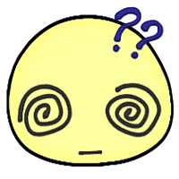

Opening Up to Kindfulness
Foreword
Mindfulness, shmindfulness. It’s everywhere. In many countries, large parts of the population have been exposed to this fashionable trend, sometimes to the point of weariness. More to the point, while the benefits of mindfulness have been publicised with much fanfare, are we really getting it right? Or could it be that we are missing out on the full potential of this ancient Buddhist practice?
The mindfulness movement has its roots in Buddhism. Early advocates used the ancient Buddhist idea to establish their own brand of mindfulness. In effect, they extracted one aspect of the Buddhist teachings, repackaged it using modern terminology, mixed it with contemporary psychology, and sold it as a tool to enhance emotional well-being and cognitive abilities. To make it more palatable to general society, they deliberately downplayed the connection to Buddhism.
There are serious downsides to this approach. Perhaps the most important of these is the loss of the context in which mindfulness appears in Buddhism. In Buddhism, mindfulness is just one factor among many that lead to enhanced well-being. In fact, mindfulness is not independent of the other aspects of mind but is founded on other more basic qualities. It is these qualities that give mindfulness its stability and power. Without them, mindfulness has a very limited effect.
Enter Ajahn Brahm. Sometimes it takes someone special to point out the obvious. Drawing on the Buddhist suttas—the word of the Buddha—he has pointed out that true mindfulness is always based on morality. Moreover, Buddhist morality is not just a negative morality of avoiding what is bad, but a specific positive morality of doing good. Only a good-hearted person will enjoy truly strong and potentially life-changing mindfulness. And by developing the good qualities of the heart, mindfulness will continuously improve.
Yet the true genius of a powerful spiritual teacher is to come up with new ways of expressing ancient wisdom. The word kindfulness combines a deep appreciation of the working of the Dharma with a playful imagination, both of which are hallmarks of Ajahn Brahm’s approach to Buddhism. Through profound understanding and light-hearted delivery, he imparts these life-changing teachings in an attractive manner to the world at large. Fun and wisdom, wisdom and fun. They always go together. And they are beautifully encapsulated in that innovative word: Kindfulness.
Happy birthday, Ajahn! For reasons not entirely selfless, we wish you many more years as a creative, inspirational, and wise Dharma teacher.
With the greatest respect and appreciation,
1 July 2021
Introduction
Opening up to Kindfulness was compiled to celebrate the arrival of a wise being who came into this world on the seventh of August 70 years ago.
Ajahn Brahm, an embodiment of kindness and compassion, is internationally known for his practical and engaging style of teaching that is easily understood in modern times, using anecdotes, humorous stories and jokes. He takes the essential ideas of the Buddha, taught in Northern India over 2,500 years ago, and redelivers them with his own personal, warm interpretation. Ajahn Brahm is, for many, an inspiring teacher who speaks directly to the heart, showing us the true meaning of wisdom and compassion for ourselves and for others. The qualities he focuses on—love, mindfulness and kindness—are universal, going beyond any one belief or religious tradition.
It is our hope that this book will draw you, dear reader, to the clarity and compassion of the message Ajahn Brahm’s teachings convey: freedom from suffering is as relevant today as it was in India during the Buddha’s lifetime.
Every chapter of this book is an edited transcript of public talks given by Ajahn Brahm in Western Australia and in Malaysia.
The book covers the basics of Buddhism as well as practical approaches to some of life’s issues.
We hope that you will enjoy the reading and see the meaning in Ajahn Brahm’s message of ‘kindfulness’ for a happier life.
July 2021
Kindfulness
One thing which I keep trying to do is to promote the idea, especially in the science of Buddhism, of not just about mindfulness but about compassion as well. So I’ve coined a new word, Kindfulness.
Sometimes the power of just one word is phenomenal as it actually changes people’s understanding of Buddhism and meditation.
There is a buzz term called mindfulness-based stress reduction therapy. This practice is so common that its acronym MBSR is widely known. When I was in Kuala Lumpur recently, a very wealthy guy came to see me. He had had some anxiety and depression disorders. Being a wealthy guy, he went to the best place in the United States, where film stars and multimillionaires go for rehabilitation. When he came to see me, he said how stupid he had been, flying all the way to the United States, spending all that money, which was considerable, because all the therapists there were just teaching what I teach here for free every Friday night!
Kindfulness. Have you heard that word before? I’m sure that after about two or three years Kindfulness-based stress reduction will be the buzzword. Why? Because meditating monks and nuns get to understand how this mind works: we have to have Kindfulness, not just mindfulness. Without compassion and softness, you get into big trouble.
What actually is Kindfulness? Let me give you some examples of kindness without mindfulness.
Years and years ago there used to be the Boy Scouts, and they had to do one good deed a day. One day a Boy Scout did his good deed of the day by helping an old lady across the road—a classic story I learnt in my youth of what you’re supposed to do if you’re a Boy Scout. But the unfortunate thing was that the old lady did not want to go! That was kindness without mindfulness.
How often is it that we think we’re being kind, but it really isn’t kindness? Because we are not being aware of what is needed. And the reason we’re not aware is that we’re not mindful of what the situation really is. The trouble is if we haven’t got Kindfulness, compassion together with mindfulness, we can make so many mistakes in life.
One of the stories in my book Opening the Door of Your Heart is of a young boy who was born deaf. He used to go to his doctor every six months just for a check-up. At one of those check-ups, the doctor mentioned that he’d just read in a medical journal that there was a simple non-intrusive procedure which would not cost very much but which was found to restore hearing to 10% of boys and girls who were born deaf. It probably wouldn’t work for this boy as the chance was low, but why not give it a try as there was nothing to lose? So the parents discussed it and they agreed to give their son a chance of hearing.
And it turned out that he was one of the 10% whose hearing was restored. What a wonderful thing that was, wasn’t it? No. Because the kid really complained. He said: ‘You never asked me. I don’t want to hear. All I’ve got now is this terrible noise. I’d rather have an extra hand.” He said he learned the world through feeling; he was so sensitive to touch. He added, “You made this assumption that everybody wants to hear, and you never asked me.”
I put this story in the book because it was an example of how often it is we assume we know what a person needs, and out of compassion we go and help them.
Many of you know that I like to cultivate a positive mind. When I go overseas to different countries, I like to learn at least one word in their language and the word I always try and remember is ‘very good’.
You can understand the power of a nice word like that. How often in your life do you get criticised and put down? “This is wrong. You should do it another way.” “You’ve been misbehaving.” Because of the nature of this harsh speech, it is so hard to get any respect. There are a lot of times we always feel we’re diminished, we’re not good enough, whatever it is we do is never good enough.
Isn’t it nice when you come up to me and tell me what you’re doing, and I say: ‘very good’? That is Kindfulness. That is an ingredient people probably need more than anything else. I’m just affirming that there’s nothing terribly wrong with you. Just this amount of kindness and respect could give you confidence and energy to let go of the past, when you may have done something unskilful.
Sometimes you’re not quite sure what it was you did, but it must be something not so good because you’re suffering right now. As a result, you’re feeling a lack of self-worth. Lack of self-worth means that we can’t love ourselves. And when we can’t love ourselves, we can’t love others, nor can we have a beautiful life.
Lack of self-worth is a great problem in our modern world.
Do you know the word in Cantonese for very good? It’s ‘Ho ho ho’. Now I understand that Santa Claus is Chinese; he doesn’t come from the North Pole but from the Far East! ‘Ho ho ho’ is an example of Kindfulness: being aware and giving kindness.
When I was in Hong Kong, I went to a very nice monastery where many monks from China came to visit. I had a conversation with the monks there about how to have discipline. If you’re going to go to university, you need to discipline yourself. If you’re working, you need to have some sort of restraint to be able to do things which are difficult to do. Everyone has to have some form of discipline but how do you get that discipline?
With Kindfulness, it’s so easy to have discipline.
Self-discipline—you can’t force it, but through Kindfulness, everything just comes out naturally; you’re aware of what is needed at this particular time and also have compassion to do what you should do.
If you’re working, what does Kindfulness mean? When you think ‘I don’t feel like working!’ and you know how you’re feeling, that’s awareness. But kindness and compassion is what is needed for you to do things for yourself, for the company in which you work, for your family and everybody else. So out of Kindfulness, you’re going to do this work.
If you are just aware without kindness, you get negative. Instead of having negativity, you are mindful that this thought is not going to be productive at all for anybody; it is hurting yourselves and others. So you’re aware of that, and you change it to Kindfulness to think what a wonderful thing it is to help other people, inspire people, solve problems and create a happier world. That’s compassion. That’s kindness.
Kindfulness is mindfulness and kindness coming together.
The last time I was in Indonesia, I gave eight talks in eight days, and many people wanted to take photographs of me. One day after about an hour and a half of signing books and being photographed, I started getting negative. I thought to myself: “What am I doing this for? I didn’t become a monk to sit here and have people take photographs. Why do they want a photograph of a monk? I’m over 60 years of age, and I’m not Brad Pitt! Why on earth are they doing this?”
Then, I realised that as soon as I started having negativity, I lost Kindfulness, and that created so much unhappiness. As a monk we are always aware of what is happening. In this case, I’m going on the wrong path, starting to get tense and even tired. When we become negative, it drains so much energy out of us. Seeing the problem, I changed my attitude and had beautiful Kindfulness instead. “I don’t know why people like taking photographs of me, but if it makes them happy, then I’m happy.” When I saw their happiness, I got my happiness back. That was Kindfulness.
So whatever you’re doing in your life, if it’s something good and positive and inspiring, which is making people happy and which isn’t doing anybody any harm, please enjoy the moment. That’s mindfulness and compassion all working together.
When you practice Kindfulness in ordinary matters of your daily life, being aware and kind instead of being negative, you’ll find it actually brings you into life. Without kindness, when you’re negative, it’s very hard to be mindful, and you just want to disappear. With negativity, people form addictions to things like drugs and alcohol, or sex, movies, etc.—anything to get them out of this moment.
“I hate ‘being here.’ I want to go somewhere else. Take me off into some fantasy land in the movies. Take me off into some weird drugged state. Get me drunk… Anything but being here.”
With mindfulness, you have to have kindness as well; otherwise, you can’t stay here in this present moment.
With Kindfulness, you are happy to be here.
Why is it that people keep worrying about what happened in the past? Or, why do they keep worrying and being anxious about the future? I’ve often told different amazing ways of how to let go of the past and the future, but unless you have Kindfulness to the present moment and appreciate being here, of course you will always want to go somewhere else.
Kindfulness also means being mindful of the truth and accepting it. When we go into the forest, we see that all the trees are crooked: some leaning to the left and some to the right, some with branches hanging off and some with all sorts of scars on the bark. The forest is beautiful because it’s natural to be imperfect. It’s natural to be damaged.
There is no person in this room who isn’t damaged goods. It’s just that some people are more damaged than others. That’s all.
We’re all damaged goods and crooked trees. That’s why we’re beautiful.
Yeah, you’ve done some terrible stupid things in life. But we’re all human. You are just another little crooked tree in the beautiful forest. You’re welcome here. There’s no punishment here. There’s no fear of being criticised or expelled. Isn’t it wonderful? You can allow the truth to come up, and once it comes up, you’re kind to it. Then, you realise that you’re just another crooked tree in this beautiful forest.
So with Kindfulness, you’re aware and kind, and when the awareness and kindness come into this moment, you are free. You don’t need to run away and hide anymore.
If you try to hide things or get rid of things, that’s not kindness. It means you’ll be racing away to somewhere else rather than staying where the action is.
Kindfulness brings you into the moment and relaxes you.
To be able to let go of the past and future, it’s not seeing the negativity of the past or a waste of time thinking about the future, but it’s actually appreciating the joy and the beauty and the compassion of being right here right now. This is Kindfulness of the present moment. When you’re kindful of where you are right now, it means you’re here and you’re kind to this moment.
Appreciating the beauty of being here and now is Kindfulness of the present.
What will happen if you are not kind to the present moment? Imagine if someone comes into your house and they’re really angry or in a bad mood, what does that do to you? That causes physical and emotional stress though they haven’t done anything, but just by being angry.
I remember one of the monks in Malaysia once told me that he was in a house doing a ceremony when a man came into the room, and he suddenly felt so tense. He was puzzled as he didn’t know who this guy was, so why was he feeling so tense and almost afraid? Later he learnt that that man was a public executioner. The negativity surrounding that public executioner made him feel tense. On the contrary, if the kindest, most compassionate person comes into the room, straight away you’ll relax.
One of the great monks I used to know was a Thai monk called Ajahn Tate. I went to see him in order to ask some deep questions about meditation. But when I went into the room, I felt he was one of the kindest monks I’d ever met! I sat down in front of him and told myself I was going to stay there forever! I felt so safe. I knew he wasn’t going to harm me or criticise me or put me down. He totally accepted who I was. I felt that he had this total unconditional acceptance. That was Kindfulness.
If you want to know what Buddhism is, it’s just the practice of Kindfulness taken to the absolute limit. With Kindfulness, you are so compassionate that you can open the door of your heart to everything.
Kindfulness gives you power, energy and wakefulness.
Metta to the Past
Metta is awesome, Dharma is cool.
Metta or loving kindness is an incredible, powerful teaching taught by the Buddha. Buddhism has gone into such great detail on what metta means: this beautiful word of loving kindness, of acceptance, of warmth, of learning to be with things, of embracing things, for the growth and benefit of yourself and other people…
The Buddha spent many years developing this concept so that now we have this incredibly powerful and awesome way of dealing with life. In fact, metta is so powerful that many people can cure almost any psychological or even some physical problems with metta. Metta meditation is well-known for its great benefits.
When I went to the United States, I heard from some of the monks in California that if you can get a monk or a recognised teacher to make a Statutory Declaration that you are a meditator, you can claim a large rebate on your health insurance! This is because everybody knows that meditation works—it creates peace and happiness, and with that happiness comes better health. And not only that, if you have metta in your heart, you’ll find you don’t have so many psychological problems. You can hold down a relationship with your partner, you can do so much better in life.
Metta helps everybody. It is non-sectarian. It can go across all religions; that’s why it’s so powerful. It is getting to the heart of the problem, and the heart is where metta comes from. In my life I’ve seen just how powerful and how deeply moving this metta can be.
Metta touches the very essence of our life, reforming it into something very beautiful.
In this series of talks on metta, I decided to split up the talks into three time zones of Past, Future and Present. I will first talk about how you can use metta towards the past, then towards the future, and last of all and perhaps most importantly, towards whatever’s happening to us now.
I will talk about metta in the three time zones because sometimes people think that metta must be only to human beings or animals. But you can have metta to inanimate things as well, including to situations in your life, to diseases in your body, or to experiences, especially in your past.
And now I am going to introduce you to one of the stories from my teacher, Ajahn Chah, about how to have metta towards the past. This particular story, in the true tradition of my teacher, was down to earth, amusing but so meaningful.
A long time ago, there were two chicken farmers in neighbouring farms.
The first chicken farmer would get up very early in the morning, take the basket and go to the chicken shed to take the produce of the previous night. He opened the door of the chicken shed, went inside and collected all the chicken dung—all the little pellets which the chickens had excreted the night before. He put that into his basket and left all the eggs in the shed to rot. Now that was a very dumb chicken farmer.
The second chicken farmer went into the shed in the morning with his basket. He collected all the eggs and left the chicken shit to rot. That was a very clever chicken farmer because with the chicken eggs he could make some omelet for his family and also sell the remainder in the market.
The moral of that story is: whenever we think of the past, when we collect the memories of what we ‘produced’ the previous day, week or year, what do we collect? Do we collect the poo or the eggs? I think many of you will associate with the first type of chicken farmer whenever you think of what’s happened to you today, last week or last year.
Why is it that we collect only smelly unpleasant stuff and leave the eggs or the good stuff to rot? We forget about the good stuff which has happened to us.
For example, we may come home from work, and your partner might say, “Did you have a good day at work today?” What do you remember? What do you bring home from work? “No. My boss argued with me today.” Or, “The telephone was out of order.” “The computer crashed.” Why is it that we always collect the stinky, rotten stuff?
Instead, we can be like the second chicken farmer when we look at the past. We can collect the beautiful stuff and leave all the rubbish back in the office to rot there. Why is it when we come home from college, from work or even just from shopping, we can’t just say, “Oh, I had a wonderful time today.”
The point is: as human beings, we have been taught to have a fault-finding mind. So whenever we look at the past, we always remember what went wrong. We collect the dung. We don’t collect the eggs.
Sometimes people say: “Oh, but Ajahn Brahm, if you don’t remember the bad stuff, you’ll probably repeat the mistakes of the past. You can learn from your mistakes.” Any psychologist would know something which the Buddha taught thousands of years ago: you learn much more from your successes than you learn from mistakes. So if we can remember all the wonderful things which happened in the past, all the great achievements and successes which we’ve been part of, not only does that encourage us and lift up our happiness and energy, but it also makes us want to repeat those successes.
When looking at the past, pick out the good stuff, and you’ll find your happiness levels increase.
When I was young, I was told: “If you just recall all the good things you’ve done, you’ll get a big head.” “Don’t praise yourself, don’t remember the good things from the past, just remember your faults. Work on those and become a better person.” BUT you become a better person not by looking at your faults but by remembering all the good things which happened. Also, you don’t get a big head—you get a big heart. This is what we’re supposed to be doing in life: to get big hearts.
In our academic institutions, we’re always taught to educate our brains, to stuff so much information in there, but here in a temple such as this, we’re educating our heart, getting a bigger and bigger heart, so big that everybody is allowed in and that every part of your past is embraced and nothing is kept out.
Only when you allow everything in, with beautiful all-embracing metta, can you find peace with yourself.
In my mind, the idea of metta comes from one of the most meaningful stories of my life, which really stands out and which has made me what I am. It was a teaching I got from my father.
That was the time when I was about 13 or 14 years of age, just a young man entering adolescence with all the confusion, peer pressure, danger of drugs and other things which were around in London at that time. Born in Liverpool to poor parents, my father was also sickly for most of his life. On this occasion, he took me in his car and we parked on the side street in the poor suburb of London where we lived. He then turned around to me—I will never forget this—and said, “Whatever you do in your life, son, always remember this: the door of my house will always be open to you.”
Only 13 years old, I didn’t really understand what he meant. All I knew was that it was important, and I kept it in mind. The reason I didn’t understand was that his house was a small apartment owned by the government with a subsidised rent. We were so poor that we weren’t afraid of burglars; actually, we liked to leave our door open, hoping a burglar might come in, take pity on us and leave something. My father died a few years later when I was 16.
Nevertheless, I remembered what he said. Later on, when I became a monk, these things came back to me. I now had the wisdom and clarity of the mind through meditation to understand what he really meant. I realised that what he meant to say was not the door of his house, but the door of his heart. That was the house he was talking about:
“Son, whatever you do in your life, wherever you go, however you turn out, the door of my heart is always open to you.”
Here is what we call unconditional love—it’s metta with no strings attached. He would love me and accept me, and I would always be his son no matter whatever I did. It was the unconditional part of the love which meant so much to me. It was not I love you if—it was I love you anyway no matter what.
I understood that was the meaning of metta. I will extend this simile later on, especially when we talk about opening the door of your heart to yourself. Here I am now encouraging you to say:
“Whatever has happened to me in the past, whatever I have done, whatever has occurred, the door of my heart is open to all of that.”
As you allow the past to come in and as you embrace everything which has ever happened to you, there is forgiveness. There’s an old Australian story about this.
There were two soldiers in their sixties meeting together at a reunion. Both had served in the Malay Peninsula during the Second World War. When they were in Singapore, the Japanese army captured that city and they were interned in a prisoner-of-war camp and treated very badly. However, they were among the few lucky ones who survived—but only just. They became great friends because of the troubles they’d been through together.
At that reunion one said to the other, “Mate, have you forgiven the Japanese yet for what they did to us in those camps during the war?” His friend said, “Forgive? I can never forgive what they did to us and the way they killed and tortured our friends. Never! What about you?” His friend said, “I forgave them years ago. You, my friend, are still in that prison camp.” That was such a meaningful exchange. Until that old soldier could forgive, he was still being tortured by the experience of his past.
Until you can forgive the past you’re still being tortured by it.
This is one of the problems we have when we carry the terrible burden and pain of the past. What metta does is to accept, embrace, forgive and learn. When we say we forgive the past, it doesn’t mean that we approve of the past. We are not saying, “What a wonderful thing that was.” What we do is to embrace it.
We may not be able to understand why those soldiers were doing horrible things, but it doesn’t help anybody to have this pain, wanting revenge for what happened to you in the past. Whatever that person did to hurt you, they’ve done bad karma, and that bad karma will ripen sooner or later. People can’t get away from the consequences of their actions. It’s a natural process of justice.
What this means is that you don’t need to be the punisher, that you can forgive and that the whole process will work its way out without you. So it’s important to have metta and forgiveness of the past, to forgive your enemies and not to linger with anger.
One of the monks I knew in Thailand was always angry and shouting at people. We thought that he was a bad character till we found out that he suffered from terrible migraines. If I had that terrible pain, I would have got grumpy with people as well. It wasn’t really his fault. It was a physical ailment which he was going through.
There’s an important story of a man who went to market to get some eggs. One day he had the afternoon off work while his wife was busy cooking dinner, so she asked him to buy some eggs for her. He had never been to the market before.
As soon as he arrived, a young man came up to him and said, “You’ve got a face like the back end of a camel! You also smell of dog poo!” And the abuse kept coming.
The husband didn’t know this young man, so he said, “Why are you saying these things? What have I done?” But to no avail. That young man kept on scolding, abusing and criticising. Worst of all, it was in a public place where everybody could hear. Would you get embarrassed? He did. He turned around and went home.
As soon as he got in the door, his wife said, “You’re early, dear. Did you get the eggs?” “No! And don’t send me to that stupid market ever again. I don’t want to go. People are just so horrible in that marketplace!”
Now the wife—wives know how to soothe their husbands —soothed him down until he calmed down enough to come to his senses.
He then told her what happened. “I don’t even know the fellow. Why did he carry on like that? I am so humiliated!”
The wife said, “What did he look like?”
When the man described his appearance, straightaway she recognised him, “Oh, it’s him. The poor man had an accident when he was young. He hit his head and suffered permanent brain damage. The poor boy never went to school or had a job. Nor will he ever find a wife to share his evenings with. We know he is mentally deranged and brain damaged. When he gets into the market, sometimes he curses me, sometimes he abuses someone else. He’s just crazy.”
As soon as the husband understood the reason why the abuse came—it was only from a crazy man—all his anger disappeared. When the wife saw that, she took the opportunity and said, “I still need those eggs, darling. Don’t mind that guy; he’s crazy.”
“Okay, I’ll go and get them.” He went back into the market with the basket, and again the crazy guy came up to him.
“Hey, hold your noses, everybody. Here comes dog poo. Close your eyes. Camel face is here.”
The husband went to the store and bought the eggs, while being abused all the way. But it didn’t matter anymore. He knew the young guy was crazy.
The moral of that story is this: if you come home and your wife scolds you, don’t get upset. She’s probably hit her head that day.
All anger, according to the Buddha, is temporary insanity. So when we understand the reason why people say or do things that may harm us physically or verbally, it’s easy to forgive.
Metta is embracing the diversity of human beings in this world.
Metta enables us to understand that we’re not perfect and that we all suffer temporary insanity from time to time. We may not hit our head, but we get bumped and bruised by some of the experiences we have. Sometimes we take that out on other people, especially those we love.
Whenever a person close to you, someone you love, gets angry at you, never think that it’s your fault. It has nothing to do with you; it’s everything to do with them. They are scolding you, not because you’ve done something wrong, but because they’re not feeling well or they’re hurt, and they’re taking it out on the ones they love. It’s a way of releasing pent-up tension. Deep down they think their partner will understand them.
If someone shouts at you, don’t get upset; just give that person a big hug and say: “Never mind.” Don’t take it personally. This is how we forgive the past.
Sometimes people say there are some things they can never forgive, things that are just too cruel, hurtful and uncalled for. But one of the most powerful statements of the Buddha was that there is absolutely nothing you cannot forgive. There’s nothing you can’t learn from, nothing you can’t grow from.
A couple of years ago, at a counselling session after a talk, a woman came up to me and told me her problem—she’d been raped. Those of you who are men, you can never understand what it feels like. For those of you who are women and if you’ve been sexually abused, strangely one of the things that goes through your mind is guilt even though it’s not your fault! It was completely the other person’s doing; still, women feel guilty; they feel they’ve contributed somehow.
Occasionally that does happen to a man, as well, but the frequency is very little compared to women. I remember reading an account in a journal of a young man who got raped by another man. One of the things he said was that he knew what was going on and he wasn’t consenting, but he froze. The fear and the confusion sometimes get so strong that one can’t react at all. It was a very good description which explains why a person just can’t run even though they have legs, they can’t punch even though they’ve got arms, and sometimes they can’t even scream even though they’ve got a mouth. The psychological terror puts one into a state of disconnected consciousness where you can’t fully participate in what is going on; you’re just standing back looking at this terrible thing happening to you, frozen, unable to move. It’s one of the reasons why people feel such guilt.
On this occasion I did what I normally do whenever I do counselling: the first few minutes, I really listen to everything that is said without making any judgement. Basically, this is to find out where they are and how spiritually advanced they are. This woman was someone who was very advanced. So I looked at her and told her that she’d been lucky to have been raped. I can’t say that to many people. This was a teaching technique to get very deep inside of her.
Straightaway she was shocked because no one had ever dared to say such a thing to her before. With a mind open, I explained what I meant. I said:
“Many people would be crippled emotionally by that experience, but for you, I think, you can understand this, learn from this and transcend it, so that your task in the future will be to help other women who have been through that experience in a way which I, as a man, would never be able to do. You’ve been there! And I think you will be able to get through this without any emotional scars, but with an emotional richness which you will be able to share with other women. Because you’ve been through it and you know the way out of that black hole of former pain, you can hold another girl’s hand and say, ‘I know.’ And you mean it! And you also know the way out. This is your task in life. That’s why I said you’re lucky. It’s a terrible experience but when you’re through it, you will be able to help so many other beings. Even with such a terrible experience like that, you can make use of it for compassion, for wisdom, for serving and for growth.”
This is what we mean by metta: the door of my heart is open to the past no matter what happened, even the very worst of things. What I mean is that we embrace it. Like I said earlier about those prisoners of war soldiers:
Only when you forgive can you be free.
Only when you embrace the past does the process of healing begin. Only when you are truthful rather than hiding things away, can there be a sense of integration, growth and then freedom. Metta does lead to freedom. It doesn’t obliterate the past or neglect it; it makes use of it to grow, and in that growth arises this freedom and compassion.
There is a wonderful story from the reconciliation in South Africa. At the African National Congress, a South African security man who had tortured to death an African activist told the congress, in front of the activist’s widow, about what had happened. The widow got up and approached the torturer and killer of her husband and said, “I forgive you.”
It was one of the most moving times of that series of reconciliation counsels—the woman whose own husband had been unlawfully killed could forgive the torturer and killer. Both people cried and sobbed. Only then was there healing, was there growth. That’s what metta is. Metta can move to such incredible depth and power.
Beyond reason, metta comes from the heart. And it heals.
If you could do that to the past and to the enemies who have hurt you, why can’t you do that to yourself?
In our modern world, people are just consumed by guilt; they just cannot let go the mistakes of their past. The issue is not that mistakes should just be obliterated and not be dealt with, but that mistakes are dealt with in the wrong way: whenever we make a mistake, we want to be punished.
Some years ago, one of the new entrants to my monk factory was a young man who had been having a hard time but was a good guy. One day he got into the kitchen in the afternoon and sneaked some food and made himself a sandwich. He was breaking one of the eight precepts, which you need to keep if you are training to be a monk—not eating in the afternoon. So, being a good guy, he came up and confessed to me, and I said: “Never mind. Just learn next time not to do it. Everyone makes mistakes, I’m not going to throw you out of the monastery because of that. It’s not a capital offence, and I’m not going to call the police. So just never do it again. Thanks for telling me.” But he was not happy! He said, “Look! That’s not good enough. I need penance. I need to be punished to stop me doing it again!”
Looking at him, I realised that he’s not going to be able to buy just plain forgiveness. He needs to learn some forgiveness. So I thought about the traditional punishment in Australia. Many of you know that Australia started off as a penal colony. The British sent all their felons to Australia where they were treated very harshly and one of the punishments was whipping, which was called ‘the cat of nine tails’, usually shortened as ‘the cat’. So I said to this young man, “Well, then, we’ll give you 50 strokes of ‘the cat’.” And this young monk trainee went white. He thought Ajahn Brahm was going to whip him! But then I explained to him what 50 strokes of the cat really means in Buddhism. I said that in our monastery we had a cat, and he needed to look for that cat and stroke it 50 times! “Learn some compassion, for goodness’ sake! Maybe stroking that cat 50 times will teach you how to be kind, to be forgiving, to be soft and be sensitive, and not so macho male!”
Why is it that we want to punish ourselves? Does it really help at all? Punishing ourselves is what guilt is all about. Instead of punishing ourselves, we have this metta and say: “The door of my heart is open to me no matter what I’ve done.” Sometimes you just made a mistake. That’s all.
We’re all allowed to make mistakes.
When I went to school, we all got caned when we made a mistake. But all I learnt from that punishment was to make sure that I never got caught again. That was the only thing I learnt—to be cleverer the next time: not that I should not do wrong things, but just to make sure I never got caught.
All that we actually learn from the punishments is to be cleverer so that we don’t get caught. We never realise why it’s wrong. That’s why sometimes punishment doesn’t work. Sometimes it’s much better to have understanding. Especially to yourself.
When we punish ourselves, what we’re really doing is denying ourselves happiness.
We think we don’t deserve to be happy. Many people experience this with dysfunctional relationships. When you get married, you can’t have a good relationship with your partner because basically you think you don’t deserve happiness; you seek punishment. Sometimes people bring on sicknesses and diseases as they don’t think they deserve to be healthy. Many of the illnesses which people have are guilt-related—something you’ve done in the past which you’ve pushed deep under your mind so that you can’t see it now but which is a cause for not allowing yourself to be happy. It comes out in stress that causes diseases.
When you can say to yourself that you’re only a human being who makes mistakes and the door of your heart is open to you no matter what you’ve done in the past, then something changes in your mind and even in your body. You become free.
Forgiveness leads to healing, happiness, and freedom.
So when you look into the past, you give it metta and compassion. Whenever you tread in the dog poo, never wipe it off your feet but always take it back to your house and dig it under your mango tree. One year later your mangoes will be sweeter than before. But when you taste that mango, you must remember that what you’re really tasting is dog poo transformed.
When you understand this simile, all of that poo from your life, all of the terrible things you’ve done or which have been done to you, they are just fertiliser or opportunities for growth. It makes mangoes or your life sweeter. So don’t get negative but give it metta, and the next time anything terrible happens to you, you can say, “Whoopee! More fertiliser for my mango tree!”
If you are going to recall your past, forgive all the rotten things which have happened and have metta towards yourself so that you can get rid of all the guilt and suffering. And don’t forget that if you need some punishment, go and find a cat or a dog and stroke until you’ve got no guilt left.
When you remember the past, remember all the wonderful things which have happened to you. If you can do that, you know how to have metta towards the past, and guilt or anger will disappear and you can grow wonderfully well in inspiration, repeating all the successes and the beautiful things which make you a wonderful human being.
Through metta towards the past, you embrace both the good and the bad of the past, and wonderful things can happen.
Metta to the Future
One of the biggest problems of human suffering is anxiety or panic attacks about the future, which happens when we worry about what is going to happen next. One of the advantages of metta meditation is that we can apply loving kindness to our future, as well, by saying:
“The door of my heart is open to the future no matter what it brings.”
And that, by itself, will make us relax and be confident that whatever happens to us next, we can always deal with it in a positive way.
It works in the same way as when we look at the past and say: “Whatever happens, I can always learn from that, I can always grow from that”. In the same way we can look at the future and say: “Whatever happens to me in the future, I can always make something out of it.”
This positive attitude towards the future is realistic, inspiring and empowering.
When I first became the abbot of the monastery in Australia, I thought to myself: “Oh my goodness! What’s going to happen to me as a leader, as a teacher, holding this responsibility of inspiring other people?” Then, I said to myself: “It can only work out one of two ways: either I become a great teacher and I can help other people, providing leadership and encouragement to show them the way—and what a wonderful thing that would be, or I am a complete failure as a teacher, unable to teach at all and every time I open my mouth, people would fall asleep or they would walk out of the room—and that would be even better because then I could be a hermit, which is what I had always wanted to be.
I thought that whatever happened it would be fine. It would always be a win-win situation. That’s actually how you should regard the future: whatever happens, you can always look upon it in a positive way. You can always have loving kindness towards the future.
The time when I first learnt to have a positive attitude towards the future was when I was sick in the hospital in the northeast of Thailand 30 years ago. That was very tough. The northeast was the backwaters of this then third-world country. I had a fever for about three to four weeks, but they didn’t know what that was at that time, so they just injected me with antibiotics twice a day. At that time, they did not have the disposable needles that we have these days. They would recycle the needles: first, they would use them in Bangkok, then they would send them to the provinces, where they would use them in the main wards first, and then they would reuse them for the monks because we were supposed to be tough guys. But even tougher than me was the nurse—she had to be because when she injected us, she stabbed! Oh, that hurt! I must admit during those early days I had no metta towards the nurse.
There I was, suffering with a fever and my buttocks aching. I felt so terrible—a Western monk a long way from home… I felt so lonely, so depressed, so awful…
And one day my teacher Ajahn Chah walked in to see me. This great monk came to visit me, a little monk! Straightaway I was so uplifted! I was so honoured! I was so inspired but only for a few seconds until Ajahn Chah opened his mouth. I always remember what he said. “Brahmavamso, either you’ll get better, or you’ll die.” And then he left!
The trouble with Ajahn Chah is that you can’t argue with him. It was true. What he was saying was true. It didn’t matter what happened, the fever wouldn’t last. Either I’d get better or I’d die. Fortunately, I got better.
So why worry about the future? Whatever happens it is not going to last. This positive attitude towards the future has helped me so many times. If you cultivate loving kindness: no matter what happens, you’ll always be able to do something about it. If you die young, you don’t have to worry about going to an old people’s home.
I have to fly a lot and one time the Australian government actually put a warning out for Australians travelling to Indonesia as there was a threat of terrorist activity. Some disciples of mine asked me, “Ajahn Brahm, what if you get kidnapped?”
“That’d be wonderful. I can have a rest for a change. I don’t have to speak.”
“But Ajahn Brahm, what if there is a terrorist on your plane?” Why are people so afraid of getting blown up in mid-air? There are three advantages of dying at 30,000 feet high. Advantage number one: you get a free cremation on the spot; it’s all done efficiently with no remains, so you don’t have to pay money to have your remains stored expensively in a temple. And your remains will be scattered, they will be spread over the world. Isn’t that nice?
Advantage number two: usually for funerals you have to spend a lot of money. If you die in an airplane explosion, the aircraft company pays your family death insurance, so your family really does well out of you.
And advantage number three: the best advantage of dying at 30,000 feet above is that you are already halfway to heaven!
Why are we afraid? Why do we look so negatively at the future? It’s because we have fear.
I don’t know if you ever rode a bicycle when you were young and can remember what it was like. I remember as an eleven-year-old getting a bicycle for the first time. Getting on the bicycle and trying to balance, I was so scared of falling off. I was so afraid that I gripped the handlebars so tightly that my knuckles went white, and my body was rigid. And because it wasn’t bending round the curves, I kept falling off. It was only later that I realised that if you’re going to ride a bicycle, you’ve got to relax, and not tense up.
If you are not fearful, you balance.
That’s the same with life. Whenever we’re afraid, we tense up, and what we’re afraid of, it happens. We make it happen. So instead of being afraid we should have metta towards the future. Whatever happens, we can make use of it. If things go well, we can enjoy our happiness. If things go wrong, we’ve got some more dog poo to dig around our mango tree next year. When you relax like that, it means you are more likely to be successful, to be happy and to be healthy.
This is why we should develop loving kindness towards the future. Whatever is going to happen to me, the door of my heart is open to that. ‘I can take chances, I can make decisions, I am not always worrying about what is going to happen next.’
The trouble is: we worry too much.
I remember again when I was a kid I had to go to the dentist. Do you like going to the dentist? I never liked going to the dentist in those days, and I worried so much I hardly slept the night before. I was so tensed up and worried. Once, when I got to the dentist’s rooms, I found out from the secretary that my appointment had been cancelled. I had worried myself sick about something which never even happened. So these days I have learnt to have loving kindness towards the future.
I don’t know what’s going to happen next, but I know metta will always pull me through.
As a monk I haven’t had any professional training in things like marriage counselling or helping people with psychological difficulties. I just go in there, not knowing what’s going to happen next, but I make sure I have lots and lots of metta. And I find that whatever you do, if you give this beautiful energy of metta towards the moment, towards the future, you will be successful. I’ve been teaching this for some time now, and I’ve got lots of stories about people who have used metta in difficult situations with incredible results.
One disciple who lived in Sydney was importing designer clothes and she was very successful in her business. Last year she went to London to a very big company for what would be a very lucrative contract. It was worthwhile travelling from Sydney to London just for one day to see if she could close this contract. When she arrived at the office, jet lagged and tired, the directors told her, “You’ve wasted your time. You’ve come on a journey which is not going to be successful. The CEO is in a bad mood this morning. He’s usually in a terrible mood anyway, but today it’s even worse. He’s been shouting and swearing at us all morning. You’ve got no hope of success.”
Imagine that was you, travelling all that way for a contract, then getting told by those who are closest to the one who’s going to sign it that you’ve got no chance. Anyway, because she’s a disciple of mine, she decided to sit in a corner and do metta meditation. ‘It doesn’t matter what happens, whether the contract gets signed or not, I will not be afraid. I will just make my mind positive with kindness towards all beings, including my future.”
Just as she was doing this, they interrupted her; the CEO was coming down. And as soon as he came into the room, when she looked at him, words spontaneously just came out of her mouth: “Wow! You’ve got such beautiful blue eyes just like my baby daughter.” The very harsh, very tough CEO suddenly melted before her eyes, smiling. A few minutes later the contract was signed. She told me that as soon as the CEO went out of the room, all the other directors who were standing around rushed to ask her: “How did you do that? Teach us!”
This is one of the beautiful examples of how metta can melt the negativity in somebody else. But if you had been afraid that you were not going to get your contract, you would have been so tensed up and would never have been able to be so spontaneous. The spontaneity comes with confidence and the confidence is having metta towards the future. It doesn’t matter what happens, you’ll always be able to deal with it somehow or other.
It’s like me: whenever I give a talk or an interview, I never prepare anything. I don’t know what I’m going to say and that’s a wonderful way of teaching because it means you can be intuitive and make the talk appropriate to the audience and you can respond appropriately. With too much time spent on planning things ahead, we get stuck in those plans and we can’t make any alternative plans, which means we can’t be open to what is going to happen next.
Metta towards the future is one way of overcoming fear and negativity towards the future.
I’ve read in many medical journals that sometimes people go for a medical check-up and find that they have had a tumor for many years without showing any symptoms. However, as soon as they know about the tumor, they get sick very quickly. It seems that fear is what makes the illness worse.
Life is like a mystery play where you’re cast in the central role.
I know that some Chinese people like to go to fortune tellers. We try to predict the future because we think that when we know what will happen, it’s going to be safer, but it actually makes it worse if you try and predict the future. The point is that it doesn’t get rid of the fear if we know what’s going to happen next. The only way to overcome that fear is this wonderful wise metta or loving kindness which tells us that whatever happens next, the door of our heart is open to it—we can handle anything no matter what happens.
So if you go with that attitude to a job interview, you come across as easygoing, intuitive and confident because you’ve got no fear. When you’ve got no fear, then you usually get the job. That confidence is one of the powerful attributes of a human being as it pushes them through to success. Just confidence. And all that confidence is, is this wonderful metta, which accepts yourself as who you are and that gives you this positive attitude and gratitude towards the future.
I know that many people have a lot of fear about committing themselves to relationships, to getting married, to setting themselves up with a partner, or changing their jobs. I spend a lot of time counselling people who are wondering: Should I marry this guy? Should I set up with this woman? should I change my job? I keep saying to them: ‘Stop worrying about it. Just do it.’
If you found out that you married the wrong person, you’d learn a lot from that mistake. It’s all learning experience. It’s not the end of the world. There’s no such thing as the end of the world. Life keeps on going.
I know there are some supposedly religious groups which try to make you afraid; they hate the talks on loving kindness towards the future. They want to make you fear that something terrible is going to happen or the end of the world is coming. Do you remember the year 2000? At that time, some people were saying that it was the end of the world. But the world never ends.
When I was a young person, people were generally more confident, and they weren’t so afraid and didn’t get these things called panic attacks. Many people these days get panic attacks where they freeze up and can’t do anything. Sometimes in the most inopportune moments they tense up so much that they can’t even scream. How can we stop these things, these intense fears which paralyse our lives?
How do you deal with raw fear and panic attacks when they’re upon you? What I’ve said so far is great in theory, but what can we actually do when it happens?
One of the wonderful tricks which we learn in Buddhism is a simple meditation using body awareness. Whenever you are afraid, you’ll find that it has a corresponding feeling somewhere in your body. Your body could be shaking or your knees trembling, or you’ve got tension in your gut. You can always associate fear and panic with a physical feeling.
I taught this technique to a young girl who was suffering from panic attacks. I asked her: “Whenever you feel such fear or panic, what do you feel in your body?” For her it was her stomach tensing up. So I told her: “When you have that fear, forget about the emotional part and go to the physical part. This is because it’s much easier to relax your body than your mind. Just be mindful of the effect of that physical emotion and go to that part of the body and relax it.”
So she massaged her stomach, giving it some attention and relaxed it for about 15 minutes. I then said, “After you’ve relaxed your body, go back to your mind.” As soon as she went back to her mind, she found the emotional part had eased considerably.
This is a great way of dealing with emotional problems: by going to the physical manifestations and dealing with them on a physical level by relaxing that part of the body, which is not that hard to do. When you go back to the mind, you find the emotional part has also lessened. It’s a feedback mechanism: mind to body and body to mind.
So if you are a person who is always afraid, when you’re going to an interview or an examination or going to propose to your girlfriend, whatever it is, look at your body: what’s tensing up, then relax that part. If you’re relaxed and at ease, you will feel confident and thus you are increasing your chances of success considerably. It is the fear of the future that things might go wrong which causes things to go wrong.
There is a Western martial art TV show I watched as a young man called “Kung Fu”. It was a story of a young man from the United States who went over to China to learn the art of Kung Fu. One episode which I remember was about fear.
The episode started with this little young novice monk called Grasshopper being taken by his blind master into a very dark, scary room. In temples there are some rooms which are always kept locked and out of bounds, and this was one of them. For the first time, little Grasshopper was taken into this dark, scary, forbidden, mysterious room. After he entered the room, it took a minute or two for his eyes to get accustomed to darkness. The master asked him, “Grasshopper, what can you see?” Grasshopper said, “I see a pool of water, Master.” “Grasshopper,” said his Master, “Don’t go close to the edge. That’s not water! It’s acid—concentrated, sulphuric acid.”
The master said, “Go a bit closer but not too close. Be careful. What do you see at the bottom of that pool?”
The little Grasshopper looked and said, “I see bones, Master. Leg bones and a skull there. I see human bones!”
“Yes,” said the Master, “They are bones of little novices like you who failed the test.”
“Do you see that plank?”
“Yes, Master.”
There was a plank going from one side of the pool of burning acid to the other side. The master said, “In seven days’ time, little Grasshopper, you will have to walk across that plank. You will have to overcome your fear and keep your balance because if you fall in, I won’t be able to save you. Your bones will add to those who already fell in.”
Poor little Grasshopper was so terrified.
The master took little Grasshopper out of that very dark room into the temple courtyard, where there was a piece of wood of exactly the same size as the plank in the dark room. The wood was supported by two bricks on either end on the ground of the courtyard. “Grasshopper,” the Master said, “For the next seven days all you need to do is to learn how to balance. Learn how to walk on that plank because in seven days’ time you will take the test of walking over the acid.”
So the next seven days, Grasshopper learnt how to balance. It was easy to do as the plank was quite wide and thick. Anyone could do it blindfolded and backwards.
After seven days came the real test. Grasshopper was taken once more into this usually locked room in the back of the temple which everybody kept well clear off. In the room, where there was the plank over the acid and the bones at the bottom, the master said, “Grasshopper, get on the end of the plank.”
Even with seven days of training, Grasshopper did not want to go. Eventually with great reluctance, poor little Grasshopper stood on the end of the plank. Then, he looked back at this master, pleading for some compassion. His eyes said: “Master, please don’t make me walk!”
“Walk!” said the Master.
There was no choice; little Grasshopper had to walk over the plank above the concentrated acid, looking at all the bones of little novices at the bottom. The plank of the same size over the stone in the courtyard was not as long or as thin as the plank over the pool of acid!
The poor little Grasshopper was trembling. By the time he was gone half-way, his body was wobbly. He looked like he was going to fall in, and he started to sway, and I got really excited! Then, the show stopped for the commercials!!
Once the adverts were finished, we were back in the temple, where Little Grasshopper started to wobble and to sway… Then, he fell in! Poor little Grasshopper fell into the acid! But the master, the supposedly most compassionate man, started laughing! How could he do that? Little Grasshopper was splashing in the pool, but he wasn’t burning. It was only water. And the bones? The master just tossed those in for what we now call special effects.
As little Grasshopper was splashing and wondering what was going on, the Master said: “Grasshopper, why did you fall in? I’ll tell you why you fell in. Fear pushed you in, little Grasshopper. Fear made you fall.”
And that was the whole purpose of the exercise, the message of that whole thing. If he’d been told that it was only water, he would never have fallen in, but once he was afraid, once he thought it was acid, his fear pushed him in.
It’s the fear of failure which creates the failure. It’s the fear of something going wrong which makes it go wrong.
So when we have fear—women may feel a hard part in their breast or men may have difficulty urinating: “Oh, my goodness! This is cancer!”—it’s likely to happen. When you’re afraid, the tension and the stress very often bring it about. People who are afraid of their partner leaving them will become controlling. The husband or wife then gets so afraid that they may be looking at somebody else. The fear destroys their marriage. When you’re married to someone, please make trust the most important thing. If you’re afraid, you control, and you create the causes for the relationship to break down.
So the only thing you should really be afraid of is fear itself. And the way to overcome that fear of our future is to have compassion for the future. Whatever happens, it’s okay. In the same way as when you were a child and you were afraid, and your mother said, “You’ll be alright… You’ll be alright.” And then it was alright. Your mother’s loving kindness for the future is what pulled you through. Now that you haven’t got a mother to do that, and I can’t do that for you, being by your bedside and stroking your hair: “It will be alright… It will be alright…” What you can do is using loving kindness: “This beautiful door of my heart is open to the future. Whatever happens, I’ll be able to do something. Never mind. It’ll be okay. The world is not going to end.”
Things don’t go wrong, nor do they go right. They just evolve into new opportunities, lessons to be learnt, or obstacles to make us stronger.
Whatever happens will be learning possibilities or growing pains. In that way, nothing stands in the way of our success. Whatever happens, we can always learn and grow, and become better people. That is how we have metta towards the future.
Without fear, we’re confident and can find success. And our happiness levels rise and rise.
Metta to the Present
So many of the stories that I tell are about how loving kindness can save people from great injury. One of the stories in my book Opening the Door of Your Heart, on the power of loving kindness, is about a monk who many years ago was meditating in a forest when a big king cobra came to visit him. I don’t know if any of you’ve ever seen a king cobra. I’ve only seen one when I was in Thailand. The villagers there had a name for it in the local dialect: ‘one-step snake’. When I asked them: “Why do you call it the one-step snake?” “Because once it bites you, that’s all you have to live—one step!”
One day while this monk, together with many disciples, was meditating in the evening, a king cobra came and slithered right up to him, raised its head, opened its hood, and hissed ‘Sssss…’ What would you do? It’s a waste of time running—those snakes run faster than you! What this monk did was to raise his hand, patting the king cobra on the head and saying, “Thank you so much for visiting me.” What he discovered was that the king cobra liked his head patted!
The power of metta or loving kindness is so strong that even king cobras do not harm or hurt such a person. The animals look to him as a refuge, as someone to protect them. Metta is your greatest insurance.
A story I’ve read recently is of a burglar who broke into a temple in the middle of the night. He knew the donation box held a lot of money. When he broke in the abbot of the temple was disturbed. He went to check out what the noise was.
The burglar took out a gun, “Open the box, or I’ll shoot you.”
The abbot had no choice, saying, “Certainly, sir.”
He opened the box and said, “You can have all the money you want, sir. But may I ask you when you’ve last eaten? There’s some food and some drink over there. Please take it before you go.”
“Yeah!” said the burglar suspiciously. He quickly opened the box, but he was fumbling as he was scared.
“I’ll open it for you,” said the monk, “Go get yourself something to eat.”
The burglar took some food to eat while the abbot opened the box. Then, the burglar took the money and ran off. He was caught sometime later for other crimes and jailed. When he was released from jail, he came back to that monastery, to that abbot.
“Do you remember me? Many years ago I came into your temple to rob the donation box, but I’ve realised I took the wrong thing. What I really wanted was your compassion and kindness. Now, I’ve come to steal that from you. Please ordain me as your monk and teach me how to be kind like you were to me.”
Of course, what people really need is kindness and compassion because it will not only give you friends but also solve problems in your daily life. Whenever you meet someone and give them compassion, it’s always so powerful.
You should cultivate compassion not only for others but also for yourself. You can give loving kindness to your own body when there’s sickness or pain. I have done this many times. When I have an ache or a pain which sometimes drives me crazy, I’ll say. “Pain, the door of my heart is open to you. Come in.” Most of pain is wanting to get rid of something, something which is a part of nature. If you practise strong loving kindness in the moment, you can even do that to the pain in your own body, and you’ll be amazed at how that pain can vanish in a short period of time.
The first time I did this was when I was a young monk in Thailand. I got a toothache in the middle of the night. At that time there were no aspirins or Panadol or any painkillers in our monastery, nor was there any phone—not even a landline, let alone mobile phones. We were in a remote monastery. We were supposed to be forest monks who could endure no matter what happened. I was trying to endure, but it was driving me crazy. I tried to meditate my way out of that pain. I sat down, crossed my legs, and focused on my breath… It was too painful! I could not get rid of this exploding pain in my jaw. When sitting meditation didn’t work, I tried walking meditation, but I had to stop that because I wasn’t walking—I was running! When you’re in pain, you can’t do anything slowly. The next thing I tried was to do some Buddhist chanting to get rid of this pain as people say that sometimes chanting has magical power. Though I didn’t really believe it, I was desperate and would try anything. Then, I had to stop the chanting because I realised if I had carried on, I would be shouting it so loud that I’d wake up everybody including the villagers two kilometres away!
There are a few times in your life that you may come across this phenomenon when you feel stranded with nowhere to go. All your strategies have been exhausted, and you just can’t stand the pain a moment longer. So the only thing you can do in such a situation, instead of getting rid of the pain, is to accept it and let it be. “Pain, the door of my heart is open to you. I’m not trying to get rid of you anymore. I’ll just be with you and be kind to you.”
When I did that, the most amazing happened—the pain disappeared. It vanished! And in its place was happiness and peace. The most unexpected experience I could ever imagine. I meditated most peacefully and had a short sleep for one or two hours. When I woke up, I had a very slight toothache.
What I learnt from that experience was that so much pain was mental, not physical. “I don’t want this! Why should I suffer this? This isn’t fair!” This pain is countered by loving kindness. Instead of fighting, dismissing, and trying to get rid of the painful contents of your day, you embrace it, allow it to be, make peace with it and give it loving kindness. You have metta to the moment. By developing such strong loving kindness, you will find how, amazingly, it can be applied to anything unpleasant which you have to deal with in life.
Metta can be applied to all unpleasant experiences in life.
Another story in my book Opening the Door of Your Heart, which was adapted from a teaching of the Buddha himself, was a story of the anger-eating demon.
There was an emperor who was away from his palace. While he was away, a terrible, ugly, stinking demon came in. As he walked into the palace, he was so terrifying that all the soldiers guarding the palace froze in terror, allowing the monster to go right onto the emperor’s chair, onto the throne and sit there.
As soon as the monster sat in the emperor’s chair, the ministers and soldiers all woke up and said, “Get out of here! Who do you think you are? That’s our emperor’s chair. You don’t belong there. Get out!” With those few angry words thrown at him, the monster grew an inch bigger, uglier, smellier and the language coming out of his mouth got worse. That made the ministers even more upset, and some soldiers got out their swords, some threatened him with clubs, others shook their fists. But every unkind word, every unkind deed, even unkind thought just made the monster grow bigger, uglier, smellier, and his language got more crude.
This had been going on for some time when the emperor came back. By this time the demon was so big that it took up half of the throne room and it was so ugly and terrifying that even Hollywood couldn’t imagine anything so ugly. And the stench coming off his body would even make a maggot sick! The language coming from his mouth was worse than what you’d hear when Australia lost a cricket match.
The reason why this guy was the emperor was that he was smarter than anyone else. He saw this ugly, terrifying demon and he knew what to do straightaway. He said, “Welcome. Thank you for coming to visit me. Why have you taken so long to pop in? Has anyone got you anything to drink yet? We have ginseng tea, we have earl grey, we have orange juice… What would you like?”
With those few kind words, the demon grew an inch smaller, less ugly, less offensive. Everybody in the palace now realised their mistake. They then started being kind to the monster. Someone took hold of his feet and gave him a foot massage. Someone asked, “Do you want something to eat? How about a pizza, monster-sized?” Every kind word the demon heard made him grow smaller and less offensive.
In a very short time, he was back to the size when he first came in, but they didn’t stop there. The palace staff carried on with kindness until the demon was so tiny, and finally with one last act of kindness the demon vanished completely away. That’s how they got rid of the demon that entered the emperor’s palace.
When the Buddha told the story, he said that we called that monster an anger-eating demon. If you give it anger, it just gets bigger and more offensive. There are many anger-eating demons in this world. For some of you, that might be your husband. You get angry with him, he gets bigger, uglier, and the language certainly gets worse. Your wife could be an anger-eating demon, too. So you realise that if you give those anger-eating demons anger, the problem gets worse.
Anger-eating demons are not just people. Cancers are notorious anger-eating demons. When they are in your body, you say, “Get out! You don’t belong in here!” When you feel such anger or such stress, it produces a growth in negativity. What do you expect? It gets bigger, uglier, and more dangerous.
Anger-eating demons could be a state of mind. Some people who get depressed would say, “I don’t want to be depressed!”
If you feed negativity to your depression, you’ll usually get depressed about being depressed. And then you get depressed about being depressed about being depressed…
Those of you who know depression, know that you go in a spiral ever downwards of depression. For those of you who are not in deep depression—I’m not talking about clinical depression, just mild depression—how about saying to yourself: “Depression, welcome! The door of my heart is open to you. Come on, I could be your friend.” You know for a start that when you are giving such positive energy to the depression, it will get less and less because depression feeds on negativity. Instead of negativity, we can give it compassion.
Metta towards the moment is so powerful it can heal so many things.
I’m not talking about saving you from bullets or patting a snake’s head; I’m talking about other problems in your life. If you can’t solve them, be kind to them, and you’ll find that metta will work so powerfully well.
However, there are some situations in your life where you could be in a bind as sometimes you could be helping other people but forgetting about yourself.
Metta has got to go to oneself as well as others.
It’s not just sacrificing yourself for other people, nor is it sacrificing other people and being selfish. The important part about loving kindness in the moment is to include yourself as well. As I said earlier, sometimes people think there are two types of Buddhism: Mahayana and Hinayana (a pejorative term for the Theravada tradition). Hinayana is to forget about other people and be concerned about your own enlightenment or your own happiness. Mahayana is to forget about yourself and think only about others. Both are wrong!
If you just think about yourself and have no compassion for others, it does not work. If you think about others and have no compassion for yourself, you get burnt out and sick.
You can recognise this problem in many marriages. In marriages, often one of the partners is Hinayana and the other one is Mahayana. One partner is thinking about him/herself all the time and the other is always thinking about their partner. Both are dysfunctional. So please keep it in mind that you think neither about the other nor about yourself—it’s about us. Kindness and compassion should be directed into the correct place.
Please be kind towards us.
Please understand that you are also included. When we do our metta practice, we say, “The door of our heart is open to all beings. May all beings be happy and well.” Have you ever noticed that when you say ‘May all beings be well,’ you forget about one being: you? So the metta has to go towards you, as well. Sometimes I need time out and rest to look after myself. Why? So that I can be of greater use to other people.
I need to look after myself so that I can be of greater use to other people.
Recently I’ve been talking about this to businesses because sometimes the reason why companies fail is not that they don’t work long enough hours but that they are inefficient. By that, I mean after you work for so long, your brain is not clear and you make too many mistakes, which you have to fix up the following morning. There comes a time when you realise the best thing for yourself and for others is to rest and to have compassion for a moment.
Someone sent me a cutting from an engineering journal from the UK. A company called Farrelly Facilities and Engineering, which specialises in building maintenance, has just won awards from bodies such as the Best Engineering Services Technology and Small Business Achievers as they doubled their turnover and tripled their profits over a two-year period. What they did was to ban overtime. That’s all they needed to do. And the employees described themselves as ‘among the happiest on this planet’.
If you are stressing out your workers, they’ll just want to leave and go to another company. They just can’t stand it. And you know just how long it takes to train another worker. When someone’s there for a long time, they build up relationships with their clients, they know exactly what their job is. One of the troubles with some companies is that they spend too much time training people because once well trained, a person goes somewhere else when they get no job satisfaction. Problem number two is that people are so negative about what they’re doing that they don’t really have their heart in their work. Number three, they work such long hours that at the end of the day their brain is so stuffed that they are not thinking clearly and thus make mistakes.
This British company saw that and used compassion instead. Their wisdom doubled their turnover and tripled their profits. I hope you can understand that. If the place where you work is caring about you, then you care about them, you want to do the right thing and you want to work hard to make that company more prosperous. So compassion is also part of modern business. Without that compassion, you just don’t get your contracts.
If you are in a position of authority in your company, then you have to be careful when sometimes someone in your community is a troublemaker. In my case, I’m an abbot or CEO of my monk factory , people said to me, “Ajahn Brahm, you are so kind to that troublemaker by not kicking him out. But by being kind to him, you’re being uncompassionate to the rest of us!” So please remember that compassion has to be balanced. Everybody in the equation counts. Sometimes our compassion is lopsided—it goes to one person at the expense of other people. When people say to me that they’ve got someone working for them who is not doing the job, but they can’t sack that person, and that this gives them such a hard time, I’d say, “Listen, it’s a compassionate thing to sack that person because it’s compassionate to everybody else, including you.”
You’ve got to have balance and see the big picture. When you see the big picture, you’ll understand that you have to make the tough decision to hurt one person, but it helps many others. Compassion has to be that way; it has to be with wisdom.
Compassion has to be with wisdom.
So when we have loving kindness, loving kindness towards the moment or towards what you have to experience, please make it wise so that everybody is taken into account. This means that whatever you have to do in this life, when you give it loving kindness, you always have energy, care and joy. As in the Buddhist saying, loving kindness is as a mother loves her only child. Whatever you care for, you pay attention to it, you look after it and it prospers. This is why loving kindness is the key to prosperity.
Loving kindness is the key to prosperity.
I don’t do that just for babies, for king cobras or for people in my monastery. I practise loving kindness to whatever I do in my life. Whether it is taking a funeral service or counselling someone, I will say, “The door of my heart is open to whatever I have to do now.” I give metta to this moment. I embrace it and enjoy it because this is the only moment I’ll ever have.
Life is what is happening now.
This is the only life you have. So what should we do with this moment called ‘now’? Please care for it. Have loving kindness to this moment.
The door of my heart is open to whatever life is teaching me now.
I endure everything: painful, not so painful, what I like, what I don’t like. It doesn’t matter. We can’t change the world. We can’t change what we have to experience. But what we can change is our attitude to life. That is in our power. You can’t change the people that you meet but you can certainly change your attitude to them.
We can’t change the world, but we can change our attitude towards it.
So we change our attitude and make it one of loving kindness. Whatever comes into my life, whatever I have to do, whatever experience arises, I will give that kindness.
Life, the door of my heart is open to you, whatever you are, or however you feel… That is the key to happiness.
Views and Intentions
Every religion has a view, and they all think their view is the right one and everyone else’s is the wrong one. What happens in religions becomes just like husbands and wives, always arguing who is right and who is wrong.
The Buddha gave a wonderful teaching on what Right View is: whatever teachings which lead to a state of peace, stillness and harmony, which lead to the disappearance of the problems of life, which lead to ceasing, which lead to enlightenment (Nirvana in Sanskrit)—these are the teachings of the Buddha. That is Right View.
In other words, what tells you what right view is, is not by whether it is in accordance with some discourses, some texts or any authority, but by what it actually does in your life, in other people’s lives and in society.
You can understand what right view is by its effect.
It is wonderful that there is a teaching which can cut across people’s arguments about whether certain ideas and opinions are right view.
“Does this view create peace and harmony in your world? Or, does it create the opposite?” Once you get the answer to those questions quite clear in your head, then your intentions will become pure.
If you have Wrong View, intentions start to go all wrong.
I always emphasise that there are three right intentions in Buddhism: the intention to let go (renunciation), the intention to be kind (no ill-will), and the intention to be gentle (no violence). This is the second of the eight-fold path to enlightenment in Buddhism.
When you’ve created these beautiful intentions of letting go, being kind and being gentle, that is what we mean by Right View. Right View leads to Right Intentions.
Before I discuss what Right View in Buddhism is, I am going to talk about a particular topic which needs to be addressed.
I’ve read in the newspapers that right now there are nationalistic Buddhist monks in some countries doing terrible things by destroying other religions’ places of worship and driving people out of their homes and even killing them. That has nothing to do with the teachings of the Buddha at all. Violence and Buddhism don’t go together.
Two centuries after the Buddha, there was a very famous Buddhist emperor of India called Asoka. As a leader and an authority figure, he actually carved on stones wise thoughts, called Asoka pillars, which remain until this day. One of the wise thoughts written on a pillar reads:
“Anyone who even criticises another person’s religion, let alone destroying that person’s temple of worship, only succeeds in demeaning his or her own faith.”
Anyone who destroys another person’s temple is destroying their own religion, taking away its credibility and its meaning. Spirituality and religion should always be about peace, kindness and harmony. Whatever creates such conditions is Right View.
So please, even if it’s a monk or a nun, you must always question. If you know something is wrong, you should take away your support for that monk or nun, or even call the police. Destructive acts are not Buddhism. When people are overly respectful of clergy or afraid of their authority, they let a lot of abuse happen.
Please make sure that you understand Right View, questioning and not taking any teachings or actions just on faith when they obviously can’t be right.
Even regarding what is right and wrong in daily life, some people ask me this question: “When you’ve got a difficult decision to make in life, how do you know whether this is the right path to go on or not?” At times, you can have theories, “This is what you should do,” and “This is what you shouldn’t do.” But the best way of finding the answer is having enough awareness to find out in your own heart whether it feels right or wrong.
Often in life you know it feels wrong, and you can trust that. Usually that is a much better indicator of ethical truth. People can read about ethics in a book, and yet they can still twist ethical guidelines around.
The best way of getting a wholesome answer is to find out in your own heart if it feels right or wrong.
When I first went to Thailand, I saw people catching fish, and I said: “You are breaking your five precepts, you are killing fish.” And this is how people twisted things around: “No, we’re not killing the fish. We’re just taking them out of the water, and they die by themselves.” You can see how easy it is to twist things around with words, documents and legal systems, but when you feel it inside your heart, you know it’s wrong.
So what actually is Right View? Is it being aware or mindful inside of you—this thing you call intuition or wisdom? You know exactly what’s right or wrong. And you know that demeaning another person’s faith is not the way to create peace and harmony in this world, let alone destroying their property and chasing them out because they do not share the same belief or the same part of that religion as you.
Demeaning another person’s faith is not the way to create peace and harmony.
Dividing everybody into sects is not Right View, either. Even in Buddhism, we have Mahayana, Theravada, Vajrayana. Which is the right one? Which is the best?
Why is it that we can’t get together and have some peace and harmony? Right View creates harmony. If we can’t have harmony within our own religion, how can we have harmony with other religions? We have this terrible violence in the world, and that has nothing to do with wisdom.
You know what wisdom does? It leads to peace and harmony. It leads to three beautiful Right Intentions.
The first one is the ability to let go. When we can actually have a bit of letting go—letting go of our views and preferences, we can have peace with other people. Whenever there is disharmony and even violence, something is very wrong.
One of the problems is that disharmony happens with human beings. We have our nationalism, our tribalism, and our religions. “I am an Eagles supporter, and you are a Dockers supporter.” (Eagles and Dockers are two big Australian football teams in Perth.) It’s alright to just have a bit of fun on the football fields or on the stands. But when you come home, please don’t go and fight over that.
Sometimes people say a country can be religious. Countries aren’t religious; people are. There’s no such thing as a Buddhist country. If you can understand that, maybe we can have some harmony and peace.
When Right View is cultivated, we have harmony and peace.
Sometimes people say that this sounds like a great theory and makes a lot of sense, but why is there so much violence in the world? Can’t we do something about it? One way of doing something about it which I love teaching again and again is to do away with religious schools, which actually divide society.
Imagine someone who went to a Buddhist primary school and a Buddhist university, then went to work for a Buddhist company, and married a Buddhist person. They would spend all their time with Buddhist people, and they didn’t really get to make friends with people across their Buddhist divide.
I want a person to be able to make friends across the whole divide so that we can have a harmonious integrated society. It is a tough thing to do but what a wonderful world this would be if your Buddhist kid’s best friend was from another religion, and they loved to go out and have fun together. What a wonderful world that would be when we can integrate! And all these suspicions which we have against each other will not actually come to such extremes and there would be no violence against other people or destruction of their property.
Now comes the question of which religion is the right religion. My answer is whichever religion that produces harmony, freedom and a beautiful sense of love is the right religion. If you think you are a Buddhist and you’re creating violence, you are not practicing the right religion—I don’t care who you are even if you are wearing brown robes (namely, you are monks). If you create or promote violence, you’ve got it wrong as that’s not what the Buddha teaches or supports.
You also have to keep it in perspective because sometimes when we have so many problems in our world, that’s all we ever see. Here is a simile which I like very much.
How big is my hand? (Ajahn Brahm puts his hand in front of his eyes.) My hand is now so big that I can’t see any of you! All I can see in the whole world is my hand. Is it my hand’s fault? Or, is it my perspective? It is MY perspective.
When I hold my hand where it belongs, which is at the end of my arm, the hand hasn’t got smaller, but now I’ve got perspective. I can see my hand and I can see every one of you as well.
This is one of the problems of perspective, which causes problems in our world. Sometimes we hold something so close to us that we can’t see anything else. We’ve lost our perspective. We then get deceived and deluded.
Another thing about Right View is an issue on organ donation. Here in Australia, there are fewer organs donated than the number of people who need them. In Buddhism, there’s nothing wrong with being an organ donor. I’m happy to donate all of my organs.
But why are people afraid of doing that? Some people, even some Buddhist traditions, say that if you give your eye to somebody, when you go to heaven, you will have only one eye. That’s really crazy.
You should know what it feels like inside when you give something. How do you feel when you give something to someone who really needs it? When you share, when you give some food, when you give a donation, when you just give someone a lift, when you just give someone time, how do you feel? It always makes you happy! It’s good karma. It’s love. It’s charity. In all religions we know, that’s a wonderful thing to do. So you don’t have to be afraid that you’re going to lose out.
Also, you don’t need those organs anymore when you are dead. As monks, we haven’t had any alcohol for many years, so our livers are pristine. It’s good to give to others! I know my organs can help other people live a healthy life.
This is a little something we can do with kindness and compassion to help our world. You don’t lose out on this. Even if they harvest your organs just before you die, you won’t feel any pain or discomfort. You feel a beautiful sense of kindness. If you do feel any pain or discomfort, it will be just the same pain or discomfort as when you have an injection or when you go to the dentist. But the pain is hardly anything at all. So you don’t need to worry about that. And you are dying anyway, and you are making that extra good karma at the end. Isn’t it wonderful? You’ll surely go to a nice place, have a good rebirth afterwards. Why not bump it up at the very end just to make sure? You’ve got nothing to lose.
There is a story about a monk—I won’t say his name as he was quite famous. He was a blood and organ donor.
One day they found he had a match for a person who desperately needed a kidney. The doctor had to rush it, “This is the match! Your kidney will fit into this guy whose kidneys have all gone. He’s in big trouble. Would you donate your kidney?”
At that time the monk, still in his thirties or forties, said, “Yes, sure, no worries.” Then, he asked “What is the problem?”
The doctor replied, “You are a Buddhist, and this man who wants your kidney is a monk of another religion, going around Sri Lanka converting Buddhists to his religion. Are you still okay with this?”
The monk said, “No problem at all. You can have my kidney.”
So he had the operation, and his kidney was taken out and put inside a man who was theoretically his opposition. What a beautiful and inspiring thing that is! This is true spirituality.
True spirituality is being kind and non-judgmental.
It is nice to talk about inspiring stories, not about monks destroying monks. Don’t just focus on the problems. It’s best that you find beautiful acts rather than miserable acts. I’ve lived in a monastery, but when I get out and about, there are more kind people in this world than angry people. There are more people who will help you, rather than people who will hurt you.
A great way of looking at our world is to see that for every two bad bricks in the wall, there are always a thousand good bricks. (You can read the story of The Two Bad Bricks from my book Opening the Door of Your Heart.) So don’t get so afraid or depressed when you look at the news. It is wrong view to look only at a part of life, looking just at the hand. Please put the hand where it belongs—at the end of your arm—to get a good perspective of life.
Another thing which I want to talk about is relationships because this comes up again and again. First, have the right view when you start a relationship: everything is impermanent.
Whenever a relationship starts out, one day it must end. Sometimes it ends early. It’s just been going a few years or a few weeks, and then it ends. Sometimes it lasts for life, but eventually it ends when one of the partners dies.
Please remember from the time you first go out together, especially when you get married, that this is a temporary relationship. Yes, a loving relationship ‘This is a marriage made in heaven. We’ll be married forever.’ sounds romantic.
However, you should understand that marriages and relationships will always end; a problem is when they end fast. The obvious reason for such an end is that if we think our relationship is going to last forever, we don’t put any effort into keeping the relationship going. We take the relationship for granted. That’s the problem.
Ajahn Chah gave a simile to demonstrate why we should not take anything for granted by holding up a glass and asked, “Can you see the crack in the glass?”
I looked. “That’s a perfectly good glass; there’s no crack in there.”
He said, “There’s a crack in there, and it’s microscopic. That’s why you don’t see it. But one day someone’s going to drop this glass, or they knock it, and that crack is going to open up and the glass is going to crack. This is nature. It’s never going to last forever.”
He then added, “If this was a plastic glass, you could kick it, you could drop it, you could do whatever with it, and it was unbreakable. It was going to last forever. That’s the difference between a real glass and a plastic glass.”
He concluded, “All relationships are glass. They’ve got a crack in there. One day it’s going to break and because you know one day it’s going to break, you look after it and care for it.”
All relationships are glass. So you should look after them.
Anything which is very valuable, you care for it. You look after it only when you realise it can be broken very easily. So when you realise that relationships are impermanent, they’re like glass, having a crack, they can finish very easily, you’ll look after them and put effort into them. Just because your sweetheart says, “We’re going to get married and I’m going to love you forever, darling,” it doesn’t mean it’s going to be true. Of course, everyone says that. But don’t believe it.
A relationship is fragile, which means you really have to care for it, put effort into it, and then when it does break in the end, you will say, “Yeah, I expected that.” When you know that this is part of nature, it means that at the end of the relationship, you don’t have a terrible surprise: “Why did he do that? Why did he run out?”
It happens to so many other couples, and you think it won’t happen to you? You think that you’re somehow special? That you’ve got this special, unique relationship, not like other people? We like to think like that, don’t we? That’s called conceit.
But when we realise that our relationship, like others’, is fragile, we’ll put more effort into looking after it and we will care for each other. And how do we do that? Right View. Let go, be kind and be gentle—the three Right Intentions. Can’t we do that in our relationship? Your husband has said something stupid, he called you a pig. Let it go. How many of you hold on to it year after year?
There is one way of letting it go that I witness every year. This weekend we’re having a new year celebration—it’s the Indian New Year, which is also celebrated in Sri Lanka, Burma, Thailand and Cambodia. In the west, people usually get drunk on the new year.
And do you know what people in Cambodia and Thailand do? People, especially in the north and northeast areas of Thailand, bring a little bag of sand to the monastery. The reason they bring the sand is that they think: we’re coming into this monastery all year and when we walk away, some of the soil of the monastery sticks to our sandals and our shoes—we’ve taken away the monastery’s sand and soil. It was as if we had stolen the soil. So now is the time we’re bringing back what we’ve taken from the monastery.
It’s a very cute way of saying: on this day we want to make sure we have no debts, and we have no bad feelings.
They also do a forgiveness ceremony. It is where the water festival comes from. Do you know that water symbolically washes away the past? In Thailand, they throw water over people, but what they really mean is to give forgiveness to each other.
At every marriage that I conduct, I always ask those two people, starting to have a serious relationship together, to have a forgiveness ceremony on their anniversary every year.
This is what I would like you all to do—on the anniversary of your marriage, just get a little token gift—nothing really expensive, and present it to your partner and tell them, “If there’s anything which I have done by body, speech or mind which may have hurt you, either on purpose or just by accident, and if there are things that I didn’t do which I should have done, I’m sorry. Please forgive me. I really want this relationship to carry on. I love you.”
No matter what a person’s done, if they ask for forgiveness with sincerity, in this Buddhist tradition, you have to give them that forgiveness. Then, the other person does the same. So once a year, on your anniversary or whenever you choose, do this beautiful little ceremony with your partner. Let go of the past with a forgiveness ceremony.
It does not have to be about people relationships only. In the last 12 months if you’ve done something really bad and you’re really hurting because of it, just come up to a Buddha statue or a place which represents peace and kindness to you and do a little forgiveness ceremony. “Whatever I’ve done over the past 12 months by body, speech or mind, intentional or unintentional, I felt I was between a rock and a hard place, and I didn’t really have much of a choice, but I feel bad about it anyway, so please forgive me.”
What a beautiful right view that is—to let go of the pain of the past instead of carrying it around with us. The pain you carry around with you gives you depression and stops you from enjoying life and having a good relationship.
Forgiveness is a very important part of Right View. It’s called ‘letting go’ and ‘being kind’.
Forgiveness is letting go and being kind.
If you’ve had a relationship and it’s ended, please be kind and let your partner go. It’s a most important time to be kind, not blaming. I don’t know how many people blame their partner. “She is so selfish.” “He’s so conceited.” Please stop blaming other people. They’re just human beings, not perfect.
But worst of all, many people—both men and women—when they go through these separations, they blame themselves and get into such a big guilt trip. “Oh, no! I should not have done that!” “I should have come home earlier.” “I should have been kind.” “I should have…” That creates such great pain.
To many people, when a relationship finishes, it feels like a death. Why can’t we celebrate the time we had together, celebrating the relationship rather than mourning the death of a wrong partnership?
Why is it that we can’t celebrate a life when somebody dies?
It’s amazing that over the last 20 or 30 years the modern way to perform funeral services has changed. No more wearing black and tearing your hair out. It has become about celebrating a life. You go there and you hear all the beautiful tales about what that person did, even some of the stupid things they did.
I remember one funeral service where a best friend of the guy who died said how he made some sort of a bomb and blew up a toilet on a construction site when he was about 14 years of age. Just kids being kids. This made the whole thing human. They were celebrating a wonderful life with all the stupid and wonderful things a person did in their life.
If we can do that at funeral services, can’t we do that at a divorce, as well? Have a divorce, come together and celebrate the wonderful times you had together. It would be a radical thing to do. Why not? Celebrate the end of a relationship—we had a wonderful time together, but it’s finished now, and we have to move on. Can’t we celebrate the wonderful time we had together? I like saying things like this because it gives you another doorway to go through so that you don’t have all this pain when you separate from your loved ones.
This is actually part of letting go and being kind to yourself. You know you did your very best though you could have done better. You’re not perfect. We all could always do better. I could always tell better jokes. But you can always be kind and more forgiving.
A lot of times people say if you think it’s going to last forever, you’re being positive and then you’re going to make it; and if you think it’s going to break, it will break. That’s not exactly how psychology works.
If you think it’s going to break, you will look after it and care for it.
When you remember that everything in life is fragile and know as truth that relationships don’t last forever and that one day you’re going to die, you don’t need to be afraid. This attitude will save many relationships as you will put more effort and care into them.
When you care for your relationship like it’s your most priceless possession, you will not drop it, you will not knock it, and then it will last a long time. And when it does bust up after you’ve given your best, you don’t blame anybody and you don’t feel guilty or angry. You don’t think there’s something wrong with you. You’re just like everybody else.
Glasses will break. If you look after them, they’ll last longer. And when they break, you know that it’s part of life. Is this a Buddhist or atheist teaching? I don’t know, but it’s just truth, isn’t it? It’s common sense.
So please be kind, be generous, let go and share. Those are the Buddhist Right Intentions, which you will have when you have Right View.
There is Right View according to the books, but the Right View which I’ve talked about here is the Right View which goes across all faiths or no faiths, and all cultures. It creates a lot of peace and harmony. It breaks barriers whether it’s between people, races, genders, or sexual orientations. We live in a small world now. We have to learn to live together, and this is the way to do it.
Right View goes across all faiths and cultures, creating peace and harmony, breaking barriers between people.
Anicca—Nothing Lasts
My teacher Ajahn Chah said that food for the body was not enough. So the most important meal is happening now because this talk is food for the heart.
Just like any food, sometimes we have junk food and sometimes we have healthy food. It’s the same with the things you put in your mind. Sometimes it’s junk food you put in the mind. Do you know what junk food for the mind is? TV! And what’s healthy food for the mind? Dharma!
For this series of talks on the three basic facts of existence, I would like to start with anicca, which is often translated as impermanence, but actually it’s more than impermanence.
You must have noticed at lunch just how fast things disappear… from your plate. You also notice the joy of the taste lasts for a moment and then it’s gone. Sometimes the expectation is the most delicious. For many people, anticipation is the happy part. As soon as you get it, the happiness or the wonderful taste goes away so quickly.
When I was young monk, after seven years in Thailand, I went back to England to visit my mother and I thought: ‘At last, I can get some English food. Maybe I’ll get some chips!’ Finally, I did get some chips. A Thai man gave them to me. They did not taste as nice as I had dreamt. Oh, what a let down!
Trouble with desires: As soon as we have them, we don’t want them anymore.
Even our desires are impermanent, unreliable. So it’s great to be able to contemplate just how these things come and go. It is a waste of time giving them more importance than we really need to.
One of my disciples lived in a rented apartment and had ordinary clothes. The only thing of value he owned was a classic Harley Davidson motorcycle.
One day he went shopping and parked his expensive bike in the shopping centre car park. When he came back, it was gone. Someone had stolen it! He was devastated. Then, he remembered all the teachings of Buddhism on anicca. So he let it go. As soon as he let it go, he felt so much happiness. He’d really understood the dharma! Then, he noticed that he was on the wrong level of the car park building. When he went down to the next level, there was his Harley Davidson. Anyway, that was a great experience for him. He was tested out and he won.
Why worry? Possessions come and go. This is just life. When we understand what impermanence is—that things are always changing, then we can adapt to the reality of life and we don’t suffer so much.
Suffering arises when we don’t understand reality, when we have unrealistic expectations of life.
So it’s great to know that things pass, that we have our loved ones come into our life and then they leave again.
Look at your children, where do they come from? It is like inviting someone into your house for 18 or 19 years from the street. You don’t know where they’re from or who they are. That’s what you are doing with your children. They come with their own karma from their previous places, and they stay with you for a while, and they leave again. So you should understand from the beginning that your job is just to nurture them for 19-20 years and once they get their degree, you should say goodbye. But how many of you can do that?
Can’t you be like the birds? They are so wise—they look after their young, sitting on their eggs for such a long time, and after they hatch, the parents fly around to find worms for them. Then, they teach their young how to fly. Once their little chicks have learnt to fly, they say goodbye to them. Wouldn’t it be wonderful to be like that?
But you need to realise that your children don’t belong to you. They’re impermanent. They go according to their karma. We go according to our karma. If we can only realise that eventually our children will leave and that things change, then we will be free.
I was telling a lady who was in trouble last night that no matter how she is feeling now, things will change. There’s a story of the emperor’s ring. It’s a wonderful story which helps heal many people’s pain and suffering in this world.
A long time ago, there was a young man who took over a kingdom. Being a young man, he wasn’t all that skillful in running the business of a kingdom. So every time the kingdom was going well, and people were happy, he would hold celebrations and parties.
Because he was spending so much money in celebrations and spending so much time enjoying himself, allowing other people to enjoy themselves, the good economic times didn’t last very long. When there were problems in the country, and unhappiness among the people, the king was so upset himself that he was spending so much time in his room sulking and getting miserable and depressed. And because of that the bad times seemed to last longer.
No, he was not a very good ruler, but the ministers and his advisers were very sharp, so they came up with a plan—they asked a jeweler to make a special gold ring with words engraved on the outside ‘This too will pass.’ Then, they presented the ring to the ruler and asked him to wear it on all occasions. And because he wore it all the time, he kept looking at it. When there were problems in the kingdom or when there were so many things to do, he would look at the ring and remember that this too will pass. He would also look at the ring in the good times as well, and realise that the time of prosperity, of health and comfort would pass, as well.
What that meant was that during the bad times, he would never get so upset or depressed that he couldn’t do any work. The bad times never lasted so long, either.
During good times, he realised that this was also impermanent. So even in the good times, he would work and would not rest. That way the good times lasted so long, and the bad times were so short that he became a very successful ruler, loved by everybody.
‘This too will pass’ gave him hope. And hope gave him inspiration to work and to endeavour.
This is the simile of our lives. We are the ruler of our body, our family and our surroundings. Sometimes we experience difficulties and suffering. What do some people do? They get depressed and sulk. As they don’t do anything, it means the bad times last longer than they should.
So whenever there’s any difficulty, always remember that this too will pass. But when things are going well, always remember this too will pass. Remembering that fact of life, you can put all the energy you can into this moment because this moment is valuable, and you won’t let it pass without enjoying it. If things get difficult, it doesn’t matter—this too will pass.
‘This too will pass’ gives us hope, gives us energy, gives us a way of looking forward. The truth of the fact is:
Whatever is happening now will not last.
Sometimes I wonder about the happiest moments in people’s lives. For some the happiest moment is when they get married. Why is that? Then, I’ve noticed that the wedding day is the pause between two kinds of suffering. Trying to get a partner and arranging the wedding is a lot of suffering, then you have the marriage ceremony, then you have the suffering which comes afterwards.
An example of the happiest time I witnessed was 20 years ago, I think, after the Iranian revolution. I was meeting someone in the airport in Perth when I saw some Baha’i refugees coming through the gate. After being persecuted and driven from their country, seeing many of their family members killed or tortured, then staying in refugee camps, they finally got resettled in Australia. After the immigration and customs procedures, they came through the gate, they punched the air! “Yeah!” They made it. Now, they had the freedom to practice their religion and hope for future prosperity.
I started to reflect afterwards. Why were they so happy? And then I realised that the degree of happiness was the reflection of the suffering they’d gone through.
Their happiness is a measure of the suffering they have gone through before.
When you look at the happiness and sufferings of life, isn’t that what you take to be happiness just a pause from some form of suffering.
Happiness is a pause between two moments of suffering. And suffering is a pause between two moments of happiness.
I sometimes reflect on the concept of a heaven. How can you have a heaven realm if it is always beautiful and nice? You wouldn’t notice it anymore because the nature of our consciousness is always to compare. If you have beautiful food every day, you won’t notice it. If you have air-conditioning every day, it is only when it doesn’t work that you notice it. Even if you’re in heaven, after a while it would not be much happiness anymore. You’ll take it for granted.
I’ve read somewhere (I could be wrong) that there was a Christian theologian in the Middle Ages who said that in heaven, one day every year you get taken to hell; otherwise, you would not appreciate what heaven is like. It’s a wonderful way of understanding what happiness and suffering really is. Otherwise, we would not know what beauty is, what ugliness is, what happiness is, what suffering is. By its very nature, heaven has to be impermanent and by its very nature, hell has to be impermanent; otherwise, you would get used to it.
I remember reading a very moving book called “Prisoner Without a Name, Cell Without a Number.” It was the story of a well-known journalist in Argentina during the time of the military junta, when many activist journalists disappeared in the middle of the night and were killed or tortured. One night the secret police came for this outspoken champion of human rights and put him away in an underground cell where he was tortured.
Afterwards he wrote a personal chronicle of his experience. The most interesting part was that he said the worst pain was when the guards handed over a letter from his wife. He had got used to pain and to being in prison, so a letter from his wife brought the contrast. He remembered his warm and loving family and thus had something to compare his torment with.
You find that within happiness and pain, it is the contrast which is important. Even in pain or in hell you don’t notice it until every now and again there is some happiness. The point of that story is this:
Without comparison, you would not understand what happiness and pain truly is.
Once we understand the impermanence of things, it helps us understand the reality of life and learn how to deal with things. We can enjoy things as long as we understand that pleasure is here now, but it is not going to be here forever.
When my teacher Ajahn Chah would hold up a glass and ask: “Do you see a crack in this glass?” I thought he was crazy as there was no crack in that glass.
He said, “There is one there, but it’s microscopic. You can’t see it yet but it’s there. One day someone will drop this glass or kick it over, the crack will expand, and the glass will break. Because it’s got a crack in it and glass is subject to breaking, you know it’s impermanent and that’s why you care. If a cup is made out of some unbreakable plastic which would survive a nuclear explosion, you wouldn’t have to care about it. You could kick it, you could throw it around, it wouldn’t break.”
Then, Ajahn Chah pointed to me, “You see that monk over there? He’s got a crack in him as well. You may not see it yet but one day the crack will open up and he’ll die.” You, your children and your loved ones all have got a crack in them, and one day it will open up and everyone will die, so you should care for them. People who contemplate anicca this way don’t become cold and heartless. They become kind and caring.
The more you contemplate the ephemeral nature of all things, the more compassionate you become.
I learned that lesson when my father cracked. He died when I was only 16 and I felt very guilty. It’s natural for young men growing up to compete with their father. I was competing with my father, too. He liked Frank Sinatra, but I liked Jimmy Hendrix. When he put on Frank Sinatra records, I’d put on my Jimmy Hendrix records, which were much louder than Frank Sinatra. So I won. When he died, I felt guilty. What did I do that for? I loved my father and I cared for him. Why did I do such a stupid idiotic thing to stop his enjoyment of the music he liked. Now it was too late. My father had died. That taught me a lesson.
You can’t afford to hurt anybody, especially the people in your family as you don’t know how long they’re going to be there. If you’ve hurt them, you shouldn’t wait until tomorrow to say sorry.
You have to say how much you care for them now because things change and opportunities pass.
There’s a story of a friend of mine who was a very successful businessman in Sydney. Just a few days after his annual medical checkup, he received a phone call from his doctor, who was also a personal friend. The first words of the doctor were: “Is your wife at home?” Why would he say that? There must be something wrong. So straightaway he responded, “What’s wrong? Actually, my wife is here.” “Sorry to report that you’ve got a rare type of blood cancer. It’s untreatable and terminal.”
This man thought he was in the best of health, but like most people, when they get a shock from their doctor, he asked, “How long have I got to live?” The doctor told him two months, or three if he was lucky.
What happened when he realised the impermanence of his life? He changed the priorities of his life. He’d always promised his family to take them to Europe. Now, he had to go. There was no time to dither. He then sold his business. He bought tickets for him and his family and booked the best hotels. This was the last time for him and his family to enjoy each other’s company.
He was holding the tickets in his hand, so the story goes, when the phone rang again. It was his doctor. “I don’t know how to tell you this,” said the doctor, “I mixed up two of my patients with the same name. I gave you the wrong results. You are perfectly healthy.”
You may have heard stories like this. Even in medicine sometimes mistakes happen. However, this man never sued his doctor; he never got angry at him. He went on holiday with his family, had a good time, and some money left over to start a new business, which became quite successful. But this time he didn’t work so hard because that experience made him realise that time passes so quickly and what’s really important is not his wealth or his business success. What’s most important is his family, his enjoyment. That was what impermanence taught him.
Because some day we are going to die, the most important thing to do is to care.
The importance of the teaching of anicca is for us to realise it is necessary not to waste time. Whatever you need to do, do it now. Do the most important things first; otherwise, you will not have time to do them. If you love your family, you should care for them now, knowing that they could be gone any day. What more could you have done? You’re only sad when they die if you’ve wasted your time. That’s the only sadness in life. Wasting time.
Anicca teaches us how to care when we have things we enjoy and how to let them go when they crack, and not with grief or too many tears.
Part of my life is to counsel people who lose their loved ones. A reason why they cry is that they never understood anicca when their loved ones were alive. They’d thought that their loved ones would always be there for them, but now they’re gone, they’re disappointed. They had unrealistic expectations.
That’s why husbands and wives should not argue with each other. You don’t know how long you have, so say sorry and enjoy each other’s company now. Understand that your spouse is cracked and going to die one day.
When my father died, I didn’t cry. I had no grief, and it took me a long time to understand how I felt. The way I felt is well explained in the simile of a concert. As a young man, I loved music and used to go to many concerts in London. At the end of a concert, everyone stood up and shouted for more. And it is the custom for the band or the orchestra to continue for another 5 or 10 minutes. But after those 5 or 10 minutes, they have to stop to go home. So did I. Every time I walked out of those concert halls or pubs, it was always raining, dark and cold. It was miserable outside, and I knew I’d probably never hear such an orchestra or band again. But never once did I feel sad at the end of a great concert. Instead, I felt so privileged and blessed for being there at that time. And that’s how I felt when my father died. It was the end of a great life, though a short one, but it was a privilege for me to be there. What a wonderful performance that was. How lucky I was to have been there at that time! This simile shows you that understanding impermanence makes you enjoy life more.
That’s a wonderful positive way of looking at death. How many of you have cried when your loved ones have died? Can’t you enjoy the very fact that you’ve known them for such a long time, that you’ve had such happy moments together? Can’t you feel joy? At least we can celebrate life and how lucky we are to have known them.
This is a different way of understanding anicca; all things disappear and fade away. All our possessions will be gone. Great monuments in this world or monasteries which we’ve built are only bricks or concrete and steel, and they will fade away. What doesn’t fade away is our karma, our goodness, our kindness, … That’s why one of my favourite sayings is:
People are much more important than things.
Do you know the English word ‘church’? That was never meant to describe a building. The meaning of church was a congregation, a group of people who would meet together. Church meant the people. In Europe and the United States, people have built enormous, impressive buildings which are so cold and lonely inside, and they call them churches. The buildings have become more important than the people who sit inside. They really missed the point. You can have an old, wrecked-up building with happy people. That’s more important.
It’s important to understand what is important in life. You understand that buildings just come and go. Even your body comes and goes, and all the Botox in the world won’t stop that impermanence. I don’t know why people are afraid of growing old. The point is: we will all get old, but we can get old gracefully by letting everything go. Eventually there comes a time when you have to let your body go. I’ve seen too many people at the time of their death struggling to live. Please don’t keep struggling in an old body to keep on going. You’ve had enough. Your old body is worn out like an old car. When it’s time to go, remember anicca: it’s all passing away and it doesn’t belong to us. We only rent this body for so many years. You aren’t your body. I’ll talk about that in the talk on anatta (non-self). So just allow everything to pass away.
When I learned Pali, there was something that was the opposite of anicca. It was nicca. In the Buddhist monastic law, there’s something called ‘nicca food’. What it means is that somebody would go to the monastery on a certain day every week, giving a regular supply of food. That’s nicca food. Nicca here means ‘regular’: something that is always there, something stable, constant or repeated. So anicca means when something which is regular or always there suddenly disappears.
It is like when you’re watching the waves of the ocean, you see the waves go up and go down and you think the rise and fall is what impermanence means. But that’s only superficial impermanence. The real impermanence is: one day you’re watching the ocean, seeing waves go up and down, and suddenly without warning and beyond all expectations, the ocean disappears, together with the land mass that surrounds you. All has vanished. It’s not supposed to have happened, but it has. Only then will you realise that impermanence is not just rising and falling but that it means:
Something which was always there has now disappeared.
Dukkha—Suffering
When I was about 19 or 20, I started to question what all this happiness business really was. All I knew was suffering—having to study really hard with the stress of examinations. I started to look at people who had finished university—were they happy?
I saw that some of my friends who were a few years older than me had finished university and were now working hard to buy a car, and they thought when they had got enough money to buy a car, they would be happy. But once they had got their car, they had to buy a little apartment for themselves, or they were looking for a wife. They said, “Oh, when I find a wife and get married, then I’ll be happy.” That’s a big joke, isn’t it?
One of my favourite sayings is from a guy who’s just got married: “I didn’t know what happiness was until I got married, and then it was too late!” These are only jokes. Marriage can be happy and fulfilling.
Anyway, I saw that some of the people I knew who were married still weren’t happy. So there’s something wrong with this business about having found a partner in life, then we’ll be happy. When you get married, you’ve got to work hard to find a house or a place to live, and it’s really expensive. Sometimes you’ve got to take a second job. A lot of people think that after they’ve bought a house and paid off their bank debt, then they’ll be happy. In the meantime, they have kids. As soon as they have kids, the first couple of months are okay, but after a while, they think that when their kids grow up and leave home, then they’ll be free and then they will be happy. But when the kids leave home, they’re not happy because they’re getting close to retirement. They think when they retire, then they will be happy. However, when they retire, that is the time when people start going to temples and churches. Do you know why they go to temples and churches when they are old? Because they think if they go to the temple and make a lot of good karma, when they die, they’ll be happy!
I’ve noticed that most of my life, and most of other people’s lives, the idea is when I get this then I will be happy. When I win the lottery, when I get rid of my husband, or when I get enlightened, then I will be happy. I’ve realised that we are missing the point there.
Suffering is thinking: when I get something else, I’ll be happy.
It’s called craving. It’s called desire. When you want something, it means you are not with what you want, so there is a tension there. I want, but I haven’t got it yet. This means you have to work hard, you have to struggle. You’re not content with what you are or what you have. This is what the Buddha called suffering.
That word suffering needs to be understood because when I realised that the Buddha said everything is suffering, I got quite depressed. So it was wonderful when I went to see some monks who were enlightened. I saw that they were very happy. How can you be happy when everything is suffering? The reason is because though there is suffering, there is also an end to suffering. There is freedom from suffering.
There is suffering, but there is also freedom from suffering.
I wanted some proof that such a thing as enlightenment existed. I wanted to see some happy and peaceful monks. So it was wonderful to actually live with a monk like Ajahn Chah, to see he was genuinely happy. There was an end to suffering, and you could actually see that.
I looked at Ajahn Chah and saw how he worked and how he behaved. There was a man who didn’t want anything, who was happy no matter what happened, but also who worked very hard, teaching and helping other people. And he taught me exactly what this suffering truly was and the way to end suffering.
Sometimes we wonder how we can get happiness in this world and why there is so much suffering. A lot of times the suffering, as the Buddha said, is because of desire and craving. You think: ‘When I get this, I’ll be happy.’ ‘When I change this, things will be different. When I change my job, change my partner, change the country where I live, …’ Whatever it is you’re changing, you think then you’ll be happy, that’s when I come to this story.
Here is a story of two sisters who came to our monastery for counselling. “What is your trouble, madam?” I said to the first lady. Her trouble was that she was married and was having a hard time, a lot of difficulty, a lot of trouble and she was wondering whether she and her husband were suitable or compatible. I said, “Look, when you are married to someone, sure it can be suffering, but it can be a lot of fulfilment as well, so you should really put more energy and effort in to make it work.”
I then gave her a few tips on how to make her marriage work. I’m not against marriage; I was just having fun making jokes about marriages.
Life will be much better if you get your priorities right. If you are in a marriage, your love for each other is more important than being right. So remember why you married that person and make that person important in your eyes. It happens very often in a marriage that oftentimes we think our partner takes us for granted and we’re not important to them anymore. We feel that we want to talk to them but they’re not listening. There’s a lack of communication. So it’s not hard to get the marriage back on track.
You should always practice the philosophy from Tolstoy’s “The Three Questions” with your partner: When is the most important time? Now. Who is the most important person? The one you’re with. What is the most important thing to do? To care.
Now is the most important time, so it doesn’t matter how long you’ve been married. Now is the most important time to tell your partner how much you love them and how much you appreciate them and how much you care for them. If you’ve done something wrong or said a stupid thing, now is the most important time to say sorry. Saying sorry costs so little, and you get so much in return. It shows that you care, and that’s what a woman or man wants in marriage—to be given importance and to know the other person cares for them. You now have a very simple formula for a successful and intimate marriage.
If your partner is doing the same thing to you, when you are with them, when you are talking, when you are together, you realise in this moment you are the most important person to your partner. That’s called love, that’s called togetherness. They are valuing you and you are valuing them, and then the relationship just grows from that.
To care—how does care happen or how is it expressed? Care happens in many different ways. When you care, you’re coming from the right place, it always works incredibly well.
After teaching the elder sister, I turned to the younger one. “What’s your problem, madam?” She hadn’t got a husband and she wanted one desperately!
I told her, “You’ve got a single woman’s suffering. And if you get a partner in life, you won’t have single woman’s suffering anymore, but you will have husband suffering instead.”
Then, I turned to the elder sister, “If you left your husband, you wouldn’t have husband suffering anymore, but you would have a single woman’s suffering.”
Changing the situation you are in is not overcoming suffering. It’s just changing one form of suffering for another.
When I was at school, I thought that when I left school and went to university, I would be happy. What I was doing was changing school suffering for university suffering. When I was very young, I couldn’t wait to be old and to have my freedom. Now that I’m old, I realise what I’ve wasted being young. When you are young, you have a young person’s suffering, when you are middle-aged, you have a middle-aged person’s suffering, and when you are old, you have an old person’s suffering.
The point is not getting rid of suffering by changing the situation you are in. Are you happy or do you want something else? What are your dreams in life? What do you really want in life? Sometimes people want to be rich. If you are rich, you don’t get rid of suffering. You have a rich person’s suffering.
I know this because as a monk I mix with all levels of society. Monks can go through doors which other people can’t go through. Every now and again we see people who’ve got so much money.
I remember on this one occasion I had to do a house blessing in Perth for a very, very wealthy lady. When we went to her house for the morning meal, we sat down and drank tea while the meal was being finished. I asked to go to the toilet. She had to draw me a map of how to negotiate all these rooms in her mansion to get to the toilet! Afterwards I was just chatting with her and asked her how many people lived there. “Only me.” This poor woman had a huge mansion, so much wealth, but she was incredibly lonely. She had no one to share her evenings with, to share her joys and pains. I asked her why. She said she’s afraid her relatives will ask her for some money and as for friends, she didn’t know if they were friends because they liked her or because they just wanted money.
That is rich people’s suffering. Rich people are very lonely because sometimes they can’t trust their friends and relations. So if you want to be rich because you think that’s going to bring you happiness, it won’t.
Why is there so much suffering in life? It’s because we don’t realise what is important and what is necessary for happiness in life.
In the West they have a tradition of eulogies—relations or someone will say something about the life of the person who just died. Never once have I heard people say how much money the deceased had in the bank or how big a house they had. When a person dies, what we remember is just how kind, how selfless, how generous they were. Those things are what really count because they are what makes happiness.
Only at a person’s death do we remember what’s truly important in life: kindness, generosity, friendliness, and service to the community.
So what we should be aspiring to is not to be the richest person in the world but to be the kindest, not to have the biggest house but to have the biggest heart, not to be the person who is the most aggressive goal-getter but to be the one who’s most loving, not the one who gets the most but the one who gives the most. Those are the secrets of ending suffering.
Sometimes things go wrong, we think, when people die tragically or when we lose our job. It’s unfair, we think. “I’ve done all the right things! What have I done wrong?” Why me? Why did this happen?
I remember the story of a man who came to see my teacher Ajahn Chah. He had been conscripted into the Thai army, and then he got shot and quite severely wounded. He came to complain to Ajahn Chah, “Why me? What sort of karma did I do that I took a bullet?” Ajahn Chah looked at him and said, “You’re a soldier. What do you think happens to soldiers? You’re shooting at other people. What do you expect? Other people are going to shoot bullets at you, and some of those bullets are going to hit. It’s to be expected. When you joined the army, you should have read the small print that you’re expected to take a bullet, to be wounded. The karma which caused that to happen is joining the army.”
Then, Ajahn Chah expanded upon that. He said some people die young, some die of a heart attack, some die in a car crash, some die from a lightning strike, some die in a tsunami, and some just drop dead. He said, “Why does that happen? Didn’t you read the small print before you took birth in this human realm? It was there in the small print: you can die at any time from any cause. That is being a human being.”
The reason we suffer is that we have expectations. We ask something of life that can never be given. We ask something of our husbands or wives or parents or our children which they can never supply. The secret of overcoming suffering is just realising the truth of life. We should make our desires realistic. Husbands are like this, and wives are like that. Children are like that. They will not all become doctors and marry the person we’d like them to marry. Nor will they always live next door so we can mother them for the rest of their lives.
Unrealistic expectation causes suffering.
So when we understand the meaning of life, what life can give us, and what it can’t give us, we then realise that the best thing we can do is to care and to be kind. We can’t expect to be appreciated for our generosity. We should give, expecting nothing in return.
We also have to realise that happiness does not lie in some mystical place in the future. Craving says: once I get this, then I will be happy. So we sometimes miss the point:
Our real happiness is right here, right now.
I’ll finish off this part with one of the secrets to end craving. This again is a story from my book Open the Door of Your Heart.
It’s the story of a monk who went to prison to teach prisoners. After many weeks the prisoners invited him to stay behind for tea. They started to ask him what it was like in a forest monastery—how we have to get up very early at 4 o’clock, how we have to work very hard, and there’s no sex, no sports, no television, no radio, no music. We meditate all day, sleep on the floor, eat one meal a day all in the same bowl. We don’t get what we want.
The prisoners were actually very surprised that prison is so much easier than in a forest monastery. Physically it’s more comfortable being in jail than being a monk. The monastery is more austere and physically harder. So one of the prisoners, out of misplaced compassion for their monk friend who they had got to love and not thinking about what he was saying, said, “It’s so terrible, so hard in your monastery! Why don’t you come here and stay with us instead?” The prisoner invited the monk to stay in jail! When he realised what he was saying, he burst out laughing.
Why is it that there is a waiting list of people trying to join an ascetic monastery but that there’s a waiting list of people trying to get out of jail? The point is: people who are in the monastery want to be there, but in a prison, people don’t want to be there. That is the main difference. From that story, I realised that life has many prisons for you.
Any place you don’t want to be is your prison.
If you are in a marriage and you don’t want to be there, then your marriage is a prison for you. If you are a monk but you’d rather be somewhere else, then being a monk is a prison for you. If you’re sick with cancer and you don’t want to be sick, then your body becomes a prison for you.
The Buddha understood that, and he talked about how to escape from the prisons of life. You don’t need to change your job, to change your partner, or change your body. That is not how you escape from prison. The only way to escape prison is changing your attitude: from ‘not wanting to be here’ to ‘wanting to be here’. When you want to be here, you are ending craving. If you want to be here ‘This is good enough’, then you’ll find contentment, the secret to the end of suffering.
Contentment is the secret to the end of suffering.
You may think that if only you get that promotion, then you’ll be happy, but if you get that promotion with more responsibility, you’ll have to work harder and you’ll get more stress.
So whatever you’ve got is good enough. “Okay, I’m not getting the best salary, but this is good enough.” “I haven’t got the most beautiful body in the world, but this is good enough.” “I haven’t got the best kids in the world, but this is good enough.” When you have this beautiful ‘good enough’ attitude, then you are content. It doesn’t mean you’re lazy and don’t work hard.
You don’t work hard to get something; you work hard to give. That’s the difference. Too many people work hard to get something back, but real effort, real love is not to get but to give. How can I help the company? How can I help my family? How can I help my society? This is the meaning of life.
Real love is to give.
This kind of craving becomes impersonal, and it does not lead to suffering. When you want to get something, thinking that you will then become happy, that is suffering. When you work very hard, expecting nothing back, that’s happiness.
Sometimes I work really hard as a monk, but I get a lot of happiness. Why is that? Because when I work hard, I don’t work to get anything; I work hard to give. And I’ve found the secret to happiness.
When you work to get something, you’re going to suffer. You’re probably not going to get it. Or, if you do get it, it’s not what you thought it was. That’s why Oscar Wilde once said: “There are only two tragedies in life: one is not getting what one wants, and the other is getting it.” The first cause of suffering is not getting what you want, and the second cause of suffering is getting what you want because you’ll find it’s not what you expected, and it disappoints you.
All desires are unfaithful to you. They promise you happiness. But once you get what you desire, it doesn’t give you happiness after all.
It’s strange how marketing works. One of the stories was from a time when I was a young student. I saw an advertisement on TV for St. Bruno Tobacco. It was a great advertisement.
There was this ordinary looking guy walking down the street alone; he didn’t have a girlfriend, and no one ever cared about him. But then he put St. Bruno Tobacco in his pipe and lit it. (This was the days before we knew smoking causes cancer.)
The aroma started spreading down the street. Then, an incredibly gorgeous girl in the bank smelt this St. Bruno Tobacco and she was smitten. She jumped over the counter, following this guy, captivated. Then, a beautiful red head in the news agent jumped over the counter too and followed this guy with the St. Bruno Tobacco. And another beautiful young girl in the grocery store also got smitten.
In about one minute, there was a long line of incredibly gorgeous women following this ordinary-looking guy because St. Bruno Tobacco captivated women. Stupid, wasn’t it? Do you believe that? I did. I bought some St. Bruno Tobacco. No, it didn’t work for me. Nobody followed me down the street.
Why is it that we have these fantasies and dreams about what life can give us and we get sucked in? We always think things could be better. But really whatever you have is good enough. So be happy with it.
In the meantime, see how you can contribute to your family, your friends, and society because that is the secret to happiness. If you want something out of it, you just get suffering. If it’s for others, for the good of the society or community, then there’s no suffering at all. Just beautiful joy!
When I look back upon my life, my happiest moments were the times when I gave the most or the times when I saw great acts of kindness and generosity. What’s the happiest time of your life?
Anatta—Nobody There
This is the last session of our series of talks on the three basic facts of existence in Buddhism. It is about a very big issue: ‘Who are you?’ or ‘Are you there at all?’
Here, we are going to go to the deepest question to life. This person inside of you, who came here today, who goes from life to life—what is it really all about? It’s a strange thing when we talk about who we are because the more we have a solid sense of self, the bigger the ego we have, the more problems we cause in life.
A person with a big ego creates lots of problems in this world.
It’s having a big ego that causes pride. Are you a proud person, too proud to admit you make mistakes sometimes? How many people here have never made a mistake? Put your hand up if you’ve never made a mistake. Proud people never think they’ve made a mistake. Or, they try to hide it under the carpet and pretend that nobody’s noticed.
There are wonderful stories about a character called Nasruddin. (Note: Mullah Nasruddin Khodja is recorded as a famous wise man living in Anatolia, today’s Turkey, in the second half of the 13th century. His stories have been told for centuries almost everywhere in the world.)
One story reads that one day after a meditation retreat, as a surprise, this wise guru let his disciples follow him to a fair. As he was going to the fair, he saw one of these booths where you could fire an arrow at a target and if you hit the target, you’d get a prize.
The Sufi cleric Nasruddin went there and said, “I’ll have a go.”
His disciples asked him if he’d fired a bow and arrow in his life, and he said, “No.”
“Don’t do it! You’re a religious leader. You’ll make a fool of yourself. Everyone will laugh at us.”
He said, “I don’t care.”
So he bought three arrows and lined up the first shot. He shot it and it went about only halfway to the target before it fell on the ground. He was hopeless. The disciples started getting embarrassed as the people saw this religious leader starting to make a fool of himself. But for Nasruddin, he just turned around and said, “That was the shot of a hasty man.”
He put a second arrow to the bow. This time he took more time. He lined up the target and shot. This time it made the distance, but it went a mile to the left, almost hitting a spectator. People started to giggle. But Nasruddin said, “Now, that was a shot of a proud man.”
His disciples said, “Leave it now. You’re just making a fool of yourself.”
He said, “No. I’ve got one arrow left.”
This time he lined up and shot, and it went right in the middle of the bull’s eye! He got his prize, silencing all his critics.
The disciples said, “The first shot was the shot of a hasty man, and the second shot was the shot of a proud man. What was the third shot?”
Nasruddin said, “Oh, that? That was me.”
That’s the trouble sometimes when people are proud. Why are people proud? It’s because they are attached to their idea of who they are. Sometimes, if you’re a teacher, it’s very easy to attach to the idea that you are a teacher. Sometimes you get it wrong and make a mistake. When you make a mistake, it’s better to admit it. I make mistakes sometimes. I remember a story of a monk who made a mistake a long time ago.
All of the things in our monastery come as donations from people such as you, who give a dollar here, a dollar there. Especially in the earlier years of our monastery we were quite poor. When I became the abbot, I was very insistent that my monks didn’t waste anything. Our donors aren’t rich people; some of them are ordinary people who sometimes are out of work, but they would still bring food to feed the monks.
So imagine what it was like when one day I was walking in the grounds of the monastery, and I saw a hammer left out in the rain and getting rusty. It must have been left out there for over a week by some careless monk!
I called a meeting of the monks. You may think I am a soft monk—very kind and gentle. But sometimes you’ve got to be fierce. I was fierce that day! I gave a sermon about looking after the gifts which people gave you.
“You never bought that hammer. It’s the gift of kind people. If they saw that hammer left out there rusty, what would they think? You’re spoiling their faith. They’d think what’s the purpose of giving these things to monks who are so careless. They don’t even bother to put the tools away after they’ve used them! This is not on. This is bad karma. You should not do these things!”
Sometimes when you give a talk, people are lounging this way and that way. But that day all the monks were sitting up straight. I really hammered them this time. I really gave them a fire and brimstone sermon. Not one of them confessed. And that was the most disappointing. But maybe it was because they were all scared. I must admit I was a bit tough. I really did go a bit over the top with my fierceness.
I was very disappointed. At least, if you’ve done something wrong, admit it. But no one admitted. When I went out of the hall after that, I felt really disappointed with the monks under my training. Why can’t they say sorry? I would have forgiven them. As I walked out, I understood… I had an insight… I understood now why no one would confess. I remembered who had left that hammer out! It was me! And I had forgotten all about it until after I had scolded all the monks!
It was one of the most embarrassing times of my life as a monk. If I had remembered first, it would have been much less embarrassing. What did I do? I had to go back into the dharma hall and say, “Sit down, everybody. I’ve found out who left the hammer out.”
As my penance, I tell that story often. I wrote it in my book Opening the Door of Your Heart, as well. The point is that we all make mistakes, and it’s the ego that stops us from admitting that we are at fault, and it’s the ego that stops us from asking for forgiveness.
The ego stops us from solving the problem with a simple “I’m sorry”.
If any of you have misbehaved… If you men have had a mistress, please tell your wife and say sorry. It’s not a disaster. The disaster has already happened when you started having that mistress. Saying sorry is solving that disaster and asking for forgiveness. It’s a wonderful thing if you ask with real sincerity. And if someone says sorry to you, please forgive them as long as they are sincere, as long as they are acknowledging, admitting and learning not to do that again.
Here is an old Somerset Maugham story I remember reading as a young man. It’s about a man, his wife, and his best friend who was helping him on his coconut plantation. One day the best friend had a tragic accident. As soon as a worker came to the plantation to tell the husband that his best friend had died, his wife fainted. It was a dead giveaway—his wife had been having an affair with his best friend! So she had to confess.
The husband wanted to divorce her. But it was his neighbour, an Englishman who ran the next plantation, who came to him and said, “Don’t do that. Forgive her. I had a wife, and she had an affair with someone else, so I divorced her. I never gave her a second chance even though she pleaded for one. For the rest of my years, I have been so lonely. Forgive. Because if you can forgive, the other person will live up to that forgiveness, and there is healing.”
Don’t be so proud. Say sorry.
A lot of the time it’s pride which does things. It’s the ego which asks, “How can I tell my friends? How can I live this down?” Don’t worry what your friends think. It’s your feelings and your future that are more important.
Forgiveness is much easier when you have a small ego. People with big ego find it difficult to forgive.
The more we understand the teachings of non-self, the easier it is to forgive others as well as ourselves and to have a much happier life. The egos make us worry about what others think about us.
There is an old joke I like. When you are in your twenties as a young person, you are very, very concerned about what other people think of you. That’s why young girls have to dress up and have to keep up with the fashion. They have a lot of peer pressure on them to be fashionable. Young men have to know all the modern words. They have to have an iPod in their ears all the time even though their mother is talking.
I remember as a young man myself, going to dances and parties. Sometimes I saw a nice girl and wanted to talk to her, but I got nervous. Why was I nervous? It was because I was scared about what she would think of me.
When you get to your forties, as the saying goes, you get what we call self-confidence. Most people at this stage, in general, don’t care what other people think of them, they just go and do it anyway. You are yourself. You can ask silly questions and don’t care what other people think of you. But the best time comes in your sixties…
In your twenties, you care what other people think of you. In your forties, you don’t care what other people think of you. In your sixties, you finally discover that people are not thinking about you anyway. Everybody is thinking about themselves! Everybody is concerned about themselves.
You don’t have to worry what people think of you. Just be yourself—whatever that happens to be. When you don’t have to be concerned what other people think of you, you don’t have to defend your ego and yourself. And who are you anyway?
When you haven’t got a fixed idea about who you are, you can be anyone you want to be.
Sometimes I say the wisest things, which even inspire myself! “Where did that one come from?” At other times, I say dumb things so that I get into trouble for it afterwards. But which one is the right Ajahn Brahm? None of them are. It’s just that you’re always changing to suit circumstances.
When Ajahn Chah went to the West, we asked him what it was like in the West. He said, “When you go to England, you have to smile. But if I go to Japan, I have to be severe.” He said that wherever you go, you have to fit in to the culture of that place. That’s why you can actually change and adapt to different people. That’s the sign of a great monk. You could never pin him down to what he was or who he was because he was no one at all—he was empty. When you understand the teaching of non-self, when you know there’s no one in here, no fixed entity, you are always able to change.
When you know there’s no one in here, you are always able to change.
I don’t know if you ever did well at school. If you thought you were no good, you would be no good. As a schoolteacher, I was very careful never to think that someone was bad at anything. That was actually creating a self.
I once experimented with one child in my class who had come bottom in mathematics the year before. Knowing he came bottom, I wanted to do an experiment to see whether it was because he was a self who just couldn’t do maths, or it was something else. So for one whole year I gave him special attention and encouragement. At the end of the year, he came top in maths. It surprised me and everyone else. It surprised him the most. It was unfair on all the other children, I admit that. Nevertheless, it proved an important thing to me: there is no one who can’t do maths. There is no one who can’t do sports. There is no one who can’t do meditation.
There’s no one who can’t reach enlightenment. All you need is extra special attention.
Some of you need heaps of special attention. What non-self means is that you are malleable and able to do whatever you want if you have the confidence to do it. So the teaching of non-self is an opportunity—you are not stuck in your past. It doesn’t matter that you’ve failed or you’re only failing now, you can still do whatever you like in the future.
If you had a self which was solid and imperfect, there’s nothing you can do about it because you would be stuck with it.
But you’re not! It’s always changing. As you understand this more and more, it means that you don’t need to be stuck in the past. It doesn’t matter who you think you are, there’s no such a thing as intelligent or unintelligent. Everything is open when there is no fixed ‘I’. As you understand this better, it means every opportunity is open to you.
There’s no door which is closed to you when you have a malleable self.
And that’s why when you see highly attained monks or nuns, it’s amazing how they can do different things. This is simply because they’ve got a plastic, malleable, changeable self, which can be bent and changed into whatever they want it to be. I saw Ajahn Chah doing that so often. He could be a very, very kind counsellor in one moment and the next moment he could be a fierce master, and the next he could be laying bricks with everybody else and sharing jokes.
The less the self, the happier you are.
This is because whatever people say about you, it doesn’t matter. How can we take any criticism when there’s no ‘me’? When you understand the teaching of non-self, it gives you a lot of freedom. But the problem is: how can we actually penetrate that teaching and see how the conditioning happens?
There are two parts of the self or the thing you call ‘you’. The first part of the self is the one in charge, the will, which I call the doer. We go to school to make sure our will gets more effective, so we can achieve more things in life. The second part of the self is what we call the one who knows, the knower or consciousness. The first is the active part of the mind, the second is the passive part. Now when you investigate deeper: what is this will or this doer?
Many years ago, I gave a simile of the driverless bus, which goes like this.
Life is like a bus journey.
Sometimes on your journey through life, you have a wonderful time. You have a wonderful, lovely family, you experience good health, happiness, prosperity. Though you want it to last forever, sometimes it doesn’t last as long as you hope. Things go wrong. It is like going on a bus journey and you go through some beautiful scenic countryside with rolling hills, flowers and lakes, so you tell the bus driver “Slow down. Stop. I want to enjoy the beauty surrounding me now.” Too often when you are having a good time, the bus driver speeds up. The good time doesn’t seem to last as long as it should because the driver, the will, does not know its job.
And other times your bus journey passes through some very ugly, distressing territory or what we call the toxic waste dumps of life—when you’re having a lot of pain, difficulty, distressing experiences in life. So you tell the bus driver to speed up out of there. It is similar to when you try to tell your will: “Please find a way to solve this problem. Please get out of this pain as soon as possible.” But very often when life is difficult, the bus driver slows down or even stops sometimes. The terrible suffering times thus last longer than they should.
What do you do when you have suffering? The trouble is that you have to find that bus driver—the will—to teach them how to drive the bus better, to slow down in the happy times and to rush on in the painful times. You have to find out who is in control, where they are and then you can teach this controller who drives your life to experience more happiness and less pain.
Where do you think your will resides? It resides deep inside of you. When we do meditation, we always go inside, deep into the moment, into the body, into the silence, into the mind. You then see deep inside yourself until you come to the bus driver’s seat. You see the source of your will. In this deep meditation, you get one of those powerful deep insights which changes your whole life.
Deep in your meditation you find that the bus driver’s seat is empty.
It’s also like flying on an aircraft. Sometimes when I had many things to do or was in a hurry, I thought of going up to the pilot’s cabin and telling them, “Pilot, can you hurry up, please?” Of course, no pilot will do that. In fact, when you are in an aircraft, it is all completely out of your control. So what do you do when you are in an aircraft? You sit in your seat and just enjoy the ‘insight’ service. The ‘insight’, not the inflight. That’s what you do in life. You sit down and enjoy the insight service.
What I mean is: when you see no self, you stop complaining. We always think that if we can control things a bit more or if we can get this self in line so that it’s wise, then we won’t need to suffer anymore.
One of the most meaningful experiments which I saw was when I was a student at Cambridge University. The Psychic Research Society of Cambridge used to have unusual people come to give a talk, including a hypnotist.
Because we were young students, everyone would volunteer. Some people can be hypnotised easily, and some can’t, but there was always one student who was a great subject. So once the hypnotist hypnotised a student and made him do stupid things. It was absolutely entertaining! (We were really mean and nasty in those days. )
One of the things which the hypnotist did was telling this young student, “After I take you out of hypnosis, I’m going to touch my left earlobe. And after I do, you’ll stand up and sing the British national anthem in full voice. When you come out of hypnosis, you won’t remember that, but you will sing when I touch my left ear.”
So, after finishing making this student do all sorts of embarrassing things, the hypnotist took him out of hypnosis and sent him to sit down. During the next 20 minutes, being a great entertainer, every now and again he’d move his finger to his ear and scratch his nose. He had us all at the edge of our seats. Finally, he touched his ear. And this poor student stood up and started singing in full voice “God save the Queen!” He sang the whole national anthem, and we were almost wetting ourselves with laughter. When he finished, the hypnotist asked him, “Why did you do that?” And the young man gave what was to him an apparently excellent reason.
It was quite clear to everybody in that audience that the young man thought he had freely decided to sing the national anthem out of a moment of patriotism, when we all knew he had no choice at all—he had been completely brainwashed. What you think is ‘free will’ may not be free will after all.
When you go to the shops to buy some cornflakes, do you really have free will when you decide which brand to buy or are you conditioned by the advertisements which you have seen on television or in magazines? You would be surprised how easy it is to condition you. Sometimes the will which we think is free is actually just the process of conditioning, the process of cause and effect.
Your will is conditioned. It is dependently originated.
Once you understand that, you’ll understand why you go to dharma centres: so that you can have your will reconditioned to be kind, to be compassionate, to be generous.
So it’s important, as the Buddha says, to associate with good people, kind people, and wise people because ‘your will’ will get conditioned by them. You’ll find you too become kind, generous and happy simply because you get brainwashed. And it’s a good thing to be conditioned this way.
But there’s another part of the self: the knower. That too is empty, just a process. Let me tell you a great story about my teacher Ajahn Chah.
In the last year of Ajahn Chah’s teaching career just before he got sick, we knew he was getting sick as he complained about dizzy spells. So to care for our teacher, we built him a sauna in our monastery, Wat Pah Nanachat. (In the old texts, we found out that in the time of the Buddha there were saunas in the monasteries.) So we invited Ajahn Chah to come over once a week to have his sauna. When he came over, he’d always give us a Dharma talk first and then we’d take him over to the sauna and help him.
One day after he gave such an inspiring talk, I was so uplifted I just wanted to meditate. As there were so many monks there, I thought I’d let others look after him like washing his bathing cloth or massaging his back. So I went to the back of the hall and went into very deep, joyful meditation. I don’t know how long I was meditating. When I came out afterwards, I thought that there might still be time to serve my teacher. So I got up and walked towards the sauna, but it was too late. Ajahn Chah had finished.
Accompanied by two Thai laymen, he was coming along the path in the opposite direction. He was on his way back to the car to go back to his monastery. As I came up to him, he looked straight through me—like only powerful masters can do, to check me out. He’d seen from the smile on my face that I had just emerged from a state of deep meditation, so he decided to try to enlighten me. He looked at me, and he barked, “Brahmavamso!” to get my attention, and then he asked the question: “Why?”
There was the opportunity for seeing the depth of all things. It was a fast way to enlightenment. But I was stupid, and all I could think of saying was: “I don’t know.”
Ajahn Chah did what he always did when we were absolutely dumb—he just laughed his head off. Then, he controlled his features and looked straight into my eyes once more. “Brahmavamso, I will tell you the answer. If anybody asks that question ‘Why?’ again. This is the answer: Mai mee arai.” Mai mee arai is Thai, meaning ‘There is nothing’. Then, he looked at me and asked, “Do you understand?” And I said, “Yes.” He shook his head and said, “No, you don’t.”
That’s one of the best teachings of non-self. The answers to the questions ‘Why?’, ‘Where does this all come from?’, ‘Who is this in there?’, or ‘What is this knower or doer mind that you take to be you?’ The answer to the question is: there’s nothing.
Once you see that there’s no one there, you will be free.
Where is the self? If you see it as something that belongs to you, then there’ll be ownership, and thus craving and attachment. Whenever I was attached to something, I’d put it down and stop attaching, but then I’d pick up something else. It was so hard to let go of attachments. You drop one thing, and you grasp something else.
Why is it so hard to get rid of attachments? I’ve realised the answer with a simile ‘Whenever you have a hand, it will always pick things up. That’s what a hand does. It’s the nature of the hand to grasp.’
Likewise, it’s the nature of a self to grasp—that’s what a self does. When there is a self, there’ll always be possessions and grasping. The only way to stop picking up my cup or picking up something else is to cut off my hand. So the only way to stop attaching to and grasping things in this world is to cut off the thing that does the grasping: the self.
The only way to be free is to undermine the illusion of self.
It’s tough to do, but it’s the only way. You can’t understand this, just by thinking. But one day when you’re meditating very deeply, you’ll see the source of ‘will’ and you’ll see it disappear. You’ll see the source of knowing, and you’ll see that it vanishes, as well. You’ll understand that in the heart of all things is emptiness. There’s no one in here. It’s like a rainbow or a cloud in the sky. When you rise high, you’ll see that it’s just mist, nothing solid.
When you can see that there’s no one in there, then all grasping finishes. Then, you can be whoever you are or no one at all. Then, you are free. Who is Ajahn Brahm? It’s just an illusion with no solid core.
Only when we realise that there’s no one there do we find freedom at last.
Karma Without Belief
The subject of this talk is the Buddhist idea of karma. How can we understand that idea, not just with belief, but through some experience or some deeper understanding?
The problem with modern life is that we are asked to believe in so many things and sometimes in something that doesn’t make much sense. You may say the same with the law of karma. If it’s something you just have to believe in, then you’re not going to get involved in such a thing because beliefs are uncertain. But can we really understand karma in a much deeper way without the need to rely upon belief?
The first thing I always like to impress upon people is that this law of karma is not about the common simplistic idea that karma means if you punched your mother when you were young, you’re going to have hay fever in your nose for the rest of your life. Or, whatever you’re experiencing now is because you’ve done something similar to somebody else in the past. That idea of action and punishment is something which has never made sense to me at all. It is far too naive and simplistic.
When you try to find out ‘Why is this happening to me? Is this because of some bad karma I did in the past?’ it’s not very helpful because you can’t work out why these things are happening to you. It happens. Thinking that it’s happened because you did something bad in the past is very negative, and it gets you into a guilt trip. This is something which I’ve tried to encourage you to get rid of.
About 30 years ago, I went to see a doctor here in Byford, and while waiting for the doctor to call me in, somebody who knew me came into the doctor’s surgery. He saw me and said, “I never expected to see you in here.”
I felt really guilty! I’m a monk who meditates and leads a nice peaceful lifestyle and doesn’t get involved in the stresses of normal life, so I’m supposed to be healthy, living a good lifestyle. He made me feel guilty about being in a doctor’s surgery.
But what’s wrong with being ill? Imagine that all these years you’ve lived as a human being, and you have never had a day of sickness in your life, you would be weird! You’d be so strange that the medical establishment would want to get you into their universities and do all sorts of tests on you. The point is: sickness is natural.
There’s nothing wrong with being sick. There’s nothing wrong with having problems in life.
Don’t think that there’s something wrong, that we’re being punished for a bad thing we did in the past, and that it was karma. No, it is not. This is part of a human life. You’ll still get sick sometimes even if you eat brown rice and vegetables and exercise every day. Even if you’re a really good wife, doing all the right things, still your husband argues with you. That’s what marriage is like. What we’re doing there is accepting that those things are part of life.
When we say there’s something wrong when our marriage is broken up, what happens? Guilt. Anger. Blame. Those are the things which I’m trying to dismantle from life. So please have no guilt or anger and say: “What is happening to me right now is part of life.”
This is taking the law of karma to see it in a far deeper, much better way. We aren’t blaming ourselves, saying that it was because of something bad we did in the past. Yes, it’s got its causes, but the point is when we say: “There’s nothing wrong with me that I’m having a problem in my life,” it takes away the guilt and the anger. And why is it right to think that way?
Because it gives you the opportunity to embrace it, to learn from it, and to grow from it.
Also, when you’re having a good time, enjoy it. There’s nothing wrong with enjoying yourself and being happy.
Some years ago, I was counselling a person who was having a very good time but was feeling guilty about it. So I typed out a letter and signed it, telling that person that it was a happiness license. “I, Ajahn Brahm, spiritual director of the Buddhist Society of Western Australia, hereby grant you permission to be happy.” I signed it for them so that they could put it on their wall and remind themselves that there is nothing wrong with being happy and they don’t need to feel guilty about it.
If you can enjoy your happiness, then perhaps you may be able to say the same thing about giving yourself permission to have a problem, as well.
Both happiness and problems are part of this thing called life.
When you’re happy, great! When you’re having difficulty, learn from it, grow from it. It’s a great fertiliser for your garden. We have a big compost pile in our monastery with all the excess food and some manure from the prison farm up the road. People love compost because they know that it’s going to make their gardens beautiful.
That was the whole point of my truckload-of-dung simile. (Who Ordered This Truckload of Dung? is a story in Opening the Door of My Heart and the title of the book published in the United States). When unpleasant things happen in life, accept them and grow from them instead of blaming yourself and saying ‘Oh! It’s my karma. I’ve done a terrible thing, stupid me! Why did I do this?!’ then getting depressed, getting angry or bitter. ‘It’s his fault. It’s the government’s fault.’ No, that’s not part of Buddhism.
Instead of getting angry at yourself or at others, which is the cause of a lot of violence in this world, we accept it. The real law of karma is the one which you don’t have to have faith in but which you can try out.
Once you embrace both problems and happiness—you enjoy the happiness and work with the difficulties—you’ll find that it’s during the difficulties and problems in life when you really grow and become an incredibly powerfully wise compassionate being, not only for others but also for yourself. So the law of karma means ‘What am I doing with what I’ve got?’
It’s the manure that fertilises the flowers and gives sweetness to the fruit.
Another nice thing about the law of karma is ‘Where is karma made?’ The whole idea of karma is cause-and-effect, so it gives you a sense of control, especially control of the future. You can’t do much about your past—it’s done, but your future lies ahead of you, and you’ve got whole vistas of possibilities.
Some of you may think: “Oh, not me. I’ve stuffed up all my life, and I’m going to stuff up again.” That kind of thinking is not the law of karma. The law of karma means you can make anything out of what you’ve got.
Out of the manure you can make a garden. Out of happiness you can make so many other people happy.
Whatever you have to deal with, the future is totally open to you. We are not restricted or limited at all.
The possibilities of your life are totally open and free.
The law of karma means all options are open, and you can do anything with what you’ve got right now. There’s no such thing as hopelessness. That’s why you should do the very best you can. Some people, worrying about the future, go to fortune tellers to try to predict the future, but while they’re being anxious, they’re not doing anything about their future. That’s why they keep stuffing up. And where do you make your karma? Right now!
Now is the place where your future is being made.
What I understand about the law of karma is: karma is what I am doing right now about my future. If I’m being negative now, blaming and being angry at people, and keep moaning ‘Why me?’ or looking at the future with dark glasses, I’m ruining the present moment and creating a terrible future for myself.
Why am I going to destroy my future by carrying around the pain of the past? I’m not going to do that. Now is the only time I’ve got, so I’m going to let go of the past and forgive so as to be free and happy. If I want to have a happy weekend, the weekend starts right now in this very moment. So I’m going to be peaceful, kind, caring and compassionate.
Compassion is a beautiful thing because, like wildfires, it takes off with just one little spark. With an act of kindness in a society, a bushfire of compassion will be spreading.
Karma means making things happen. You don’t make things happen tomorrow or next week. You make it happen now. Understanding the power of that, you realise this is the time to transform, this is the time you let go, this is the time you’re free. And once you walk out of the jail of the past, you’re free forever. So get out of jail right now.
When you learn how to do this, your future gets happier and happier. When a problem comes or whatever happens in your life, instead of saying there’s something wrong and getting negative, please think: “This is great! Let’s learn from this.”
Another issue is about making mistakes. How many of you have never made a mistake? What happens when you make a mistake? Do you feel embarrassed? No, you shouldn’t. You’re just a human being. Isn’t it great that we’re allowed to make mistakes? This thinking takes away a lot of guilt and, more importantly, fear. Out in the world, if you make a mistake, you get told off or you lose your job. Not in Bodhinyana monastery where I live. When people here make a mistake, “Well done. You’re human.” That’s why the place is a mess. No, it’s not a mess; it’s a very happy place.
The thing which I’m most proud of about our monastery is that people feel welcome. You don’t have to be perfect. You don’t have to sit in the correct posture. If you don’t want to bow, don’t bow and don’t feel guilty about it.
One time at Dhammaloka, our city centre, a lady sitting in the corner over there fell asleep during my talk and started snoring. Was there something wrong about that? No. The mistake was when somebody tried to wake her up! I told them afterwards that the woman had told me that she was one of those unfortunate victims of domestic abuse and she was so afraid and so tense in her house that she was not sleeping well. But here is the first place in weeks where she felt safe. It’s the atmosphere you create here that’s even more important than all the talks that are given. The fact that she felt so safe that she could lie down and actually fall asleep made me think, ‘Wow! What a great achievement of the Buddhist Society of Western Australia! We could give that feeling of safety and kindness so that she could fall asleep.’
Sometimes you make what people call mistakes, and how many times have you been told off? You think, ‘What did I do wrong? I just made an error, made a slip.’ Wouldn’t it be nice to be accepted and loved, and to know that there’s nothing wrong with making a mistake?
So number one: we don’t hide our mistakes; we face up to them and learn from them. The psychology of this attitude is that people actually make fewer mistakes when they’re allowed to. When you’re so terrified of making mistakes—we call it walking on eggshells—you’re not relaxed, you can’t perform to your highest level, and that is why you make so many mistakes.
If you are going out with someone, please tell your girlfriend or boyfriend that they’re allowed to make mistakes. Tell them that from the beginning so that they can relax. When you relax and can be yourself, you have a much better time together. And when you get married, tell your partner, “Darling, you’re allowed to make mistakes.”
Trust that people are trying to do their best. Most people are like that.
Getting angry, getting guilty, and blaming is bad karma. Accepting, embracing, compassion, and learning is good karma. I don’t think you need to have faith in that. You can try it out yourself. Always remember that it’s not what you’re experiencing—no matter whether it’s a problem or happiness, it’s how you’re experiencing it that is the source of karma. That is where karma lives.
It’s not what you’re experiencing. It’s how you’re experiencing it!
Suppose you’re going through a divorce. That’s part of life; it happens. How are you doing this? With anger? With guilt? No. This is part of life; there is nothing wrong with this. So please learn from it, grow from it, and become a better person. Going through a problem in life, a cancer or a divorce, is not bad karma, but if you really get into grief about it, into denial, into anger, looking for somebody to blame, that’s bad karma.
Karma is the way you relate to life, not life itself.
Guilt, anger, denial, or blaming is bad karma, a cause for most of the misery in this life. When people think something is bad, they’re afraid. That’s why people often get into denial when someone they love is close to death, or they themselves have developed a fatal tumour. ‘Why me?’ That’s actually what we all say, isn’t it, if we don’t really understand the law of karma?
Karma is happening right now. You are making your future right now by the attitude you have towards what’s happening in your life. Good karma is when you say, ‘How can I learn from this?’ with what is happening now.
A very beautiful old Chinese saying ‘It’s better to light a candle than curse the darkness’ encapsulates all that I’ve taught this evening. So whenever you want to complain about something in life—your partner or your job, instead of complaining, please light a candle. There are always many candles around to light. There’s always something positive you can do—sometimes it is just to embrace and learn.
Sometimes people ask: ‘What is the meaning of life?’ A simple answer to a very deep question is to learn.
Life is work in progress.
So how are you growing? I don’t mean growing in size or growing your bank account; I’m talking about growing your wisdom, your compassion, your understanding of life. In the past year how much have you learnt? How much wiser and kinder have you become? That’s the meaning of life.
To become wiser and kinder— That’s the meaning of life.
So how do you become wise and kind? Right now is where you do this, as well as building happiness and health. Now is where karma is made.
Now you know not only the meaning of life but also the secret of life. People look for the secret of life in the future with all their plans and expectations and what they’re going to achieve. But you never find anything in the future. Sometimes people look for the secret in the past, searching over all the things which have happened to try to find the meaning from the mistakes of the past. But you never find anything except anger, guilt and negativity.
You only find the meaning of life right now.
The secret is in this moment, absolutely for free. Truth is like air—no one can own it; we all share it. You can pollute the air, and people can pollute truth, still there’s enough truth out there, and you just need to breathe in.
Question: How do you motivate people who have no will to live?
Ajahn Brahm: Instead of having the will to live, just have the will to be compassionate, to be kind.
Losing the will to live is the fear of the future. They feel they’ve had enough when they can’t see any positivity or any hope. Hopefully the talk I’ve given this evening, which is actually saying there’s nothing wrong with life, will give them some understanding. The world never changes, and life has always been like this. So please see if we can change our attitude towards our life.
The will to live is the will to be kind.
Just take away the will to live, the will to die or the will to go anywhere, and just be.
Question: How can animals improve their karma?
Ajahn Brahm: One of my friends, a doctor in Melbourne, got a big Labrador. She gave it the name ‘Chemo’. That’s a really weird name, isn’t it? Why did she name it Chemo?
She said, “Because I’m training this dog to be one of the dogs that go into wards with people who are very sick so that the patients can pet and stroke that dog.”
The compassion which a beautiful soft animal generates has a very strong positive effect on people’s recovery—they actually get better. Having a beautiful dog to play with in the ward spikes up serotonin and endorphin and all other beautiful healthy things in our body.
That’s why she called her dog Chemo, shortened for chemotherapy, as a joke. So Chemo the dog went into so many hospital wards in its life, healing and helping people. That dog must have made a huge amount of good karma just by generating happiness in other beings. That is one example of how animals make good karma: by being kind, loving and trusting. When you see these beautiful qualities in a little dog or a cat, you are reminded how to be kind.
So that’s how animals can make good karma—teaching about kindness, about love, about trust.
Question: What is some basic daily practice that a lay person should do?
Ajahn Brahm: The daily practice is to start now—be kind, be compassionate. It doesn’t matter what you do; how you do it is really important. You may be just driving to work in the morning, but how are you driving to work? Are you listening to the radio and getting yourself all upset because the traffic is bad? When you’re on the way to work, is your mind already at work?
A daily practice to try when you drive to work is: every time you get to the stop sign, please think that the Buddha is teaching you to stop, be peaceful, and come into the present moment. All the stop signs which you see around the cities of the world are the dharma to remind you to stop and be here rather than always moving. That’s one of the nice daily practices.
Another daily practice is about the emperor’s three questions from one of Tolstoy’s stories: now is always the most important time, the person in front of you is always the most important person, and the only thing to do is to care.
It doesn’t matter what you’re doing. If you’re at home by yourself, you are the most important person because that’s the one you’re with, and care for yourself and care for life. When you are with other people, you care for them.
What really does work is developing the right attitude to whatever you have to do in life. That should be your daily practice.
Developing the attitude to be kind and caring should be our daily practice.
Total Listening
Listening is such an important part of learning to live in harmony with other people as well as in understanding oneself.
An ability to listen can be improved when one learns how to be mindful and aware. As awareness gets stronger, one can listen much more attentively and fully—one literally hears and understands more. Then, one learns how to listen to the world rather than always talking back at the world; especially, one will learn to listen to oneself and one’s own mind.
It’s part of our training as monks that we learn how to sit still for hours without talking. With nine years of training in Thailand in how to sit quietly as senior monks gave talks, when I first came to Australia, I would sit quietly while the senior monk gave talks on Friday nights. Even afterwards when people would ask questions, they’d ask questions of him, and I would just sit there.
About four months after I arrived, the senior monk went to Thailand for a break, so I had to give the talks. As soon as I started speaking, a young girl came up to me and said, “That’s amazing—you can talk! I thought you were brain-damaged.” Just because I didn’t talk, she thought I was somehow mentally deficient.
Isn’t it a shame that we don’t respect silence, that we only respect talking? It’s one of the reasons why we aren’t good listeners, but we’re good talkers. We have developed the ability to express ourselves as we learn that in school and in many other parts of life to express, to present, to convey our feelings to others. But can we receive what others convey to us? Can we really listen?
We respect talking, but can we really listen?
Too busy to listen
Often when somebody is talking to you, you’re only half listening and probably paying more attention to the conversation going on inside of you, the inner chatter, so much so that you don’t pick up what other people are trying to tell you.
We miss so much in life when we’re too busy talking and not listening.
It’s like the old thing between husbands and wives; one starts to talk and the other starts thinking: “Here we go again. Why does he/she keep saying the same old thing? I’ve had enough of this. Doesn’t he/she know that I’m tired too? I don’t need this now!” Our partner has just started talking, and there’s already a conversation going on between our ears to which we pay much more attention than what our partner’s saying. We just can’t listen.
People are also fantasising or dreaming because their fantasy world is much more fun than listening. That’s why you have to tell jokes every now and again to keep people’s attention.
Relationships with other people could cause so much strife but they could also bring so much happiness. Why is it that people keep telling me that they can’t communicate? You need two people to communicate—one person to do the talking, which is easy to find, and the other one to do the listening, which is hard to find!
A story which I love repeating is when we first moved to Serpentine. I was walking past the monastery kitchen just before lunch and happened to look through the window and saw six women cooking our meal for the day (a beautiful custom of making good karma). But I noticed that every one of those six had their mouth open, talking at the same time. So I started contemplating: ‘If six people are talking and there are only six people in that room, who’s left to do the listening?’ Obviously, no one! That represents our modern life: everybody’s doing the talking and very few are doing the listening.
Compassionate listener
If you really want to be wise and get on this spiritual path—in other words, to become more compassionate and more understanding of what’s going on—it’s much more important to be a listener than to be a talker. We start in an ordinary way of learning how to listen to each other.
Talking, we can get into arguments. Listening, we become wise.
When you’re listening, you’re absorbing all this beautiful information. You’re able to hear not only the words but also what’s between those words as well as the body language. Whenever somebody is communicating with you, it’s not just through their words; there are so many other channels of communication happening, even at the mind-to-mind level.
If anybody thinks that monks or nuns have psychic powers and are able to read minds, it’s nothing supernatural. It’s just about us being aware enough, silent enough, with our mind empty enough to pick up more information than other people usually do, and then we can really understand what a person is saying. When somebody starts speaking to me, I don’t prepare what I’m going say next and I don’t judge them or what they are saying.
As a monk, we learn how to listen. We train in how to keep a quiet mind so that we can truly listen with all our senses. I call that ‘Total Listening’.
An amazing thing happens when we absorb all this information and allow it to be processed through our brain, through our mind: an answer comes out.
Playing the violin
A counsellor from Sydney once told a story at a Buddhist conference about a client who had flown all the way from the United States. This client had so many disorders, including anxiety, depression and a few terminal cancers. She was in a physical and mental mess, and no one had managed to help her. She was a very wealthy woman and had heard of this counsellor over in Sydney, so as a last resort she made an appointment and came all the way from the States.
Informed of this client’s background, the counsellor, who was a meditator, knew that all the usual ways of dealing with this lady’s problem wouldn’t work; they’d already been tried. So she decided to do ‘Total Listening’.
When the woman came into the room the counsellor just went very peaceful and very quiet—no thoughts. She threw away all of her learning because that would just create more static between the ears. She listened to this person for a few minutes, and when it was the counsellor’s turn to speak, these words came out of her mouth—she didn’t know from where: “I think it’s about time you started playing the violin again.”
It was a comment which had no connection to what had been physically said but which caused this woman to burst out crying. And her catharsis began from that point. It turned out that when she was young, her mother said that a girl of her social position should not waste her time playing music, even though that was something she loved, and that she should do something more important. It was the beginning of her mother controlling her life, stopping her from doing what she really wanted to do. Just the statement: “You should start playing the violin again” gave permission to this elderly woman, who was suffering so much from cancers and other disorders, to be free and to follow what she really wanted to do, to unwind, to un-control and just to be. From that point on, her recovery started.
It was one of those examples where you listen rather than think. Your intuitive powers become amazing, and you can say and do things which you cannot predict, which may not make sense, but which really work.
Listen deeply
A lot of times when we think too much, we don’t really listen. And when we don’t listen, we don’t understand and mess many things up. So in life, please see if you can calm that thinking mind down enough so that you become a great listener. How do you become quiet, stop speaking so much, and especially calm down that inner voice?
Meditation is where you learn how to listen deeply. In meditation, we learn how to be quiet so that we hear and understand much more of life.
When meditating, we realise that this inner chatter is what causes us to be unable to listen. There are little techniques for how to be quiet.
Present moment awareness is very important because in the present moment there’s nothing much to talk about. If you really get into the present moment, much of the busyness of life is taken away from you, which means it’s much easier to be silent.
Another technique which people find very effective is using a mantra. There are many mantras and whilst I’m a Theravada monk, I can recommend the Tibetan mantra of ‘Om mani padme hum’. You chant that to yourself to block out thoughts, which sometimes become incessant. Once you start that chant, you then introduce spaces between the words. Not just ‘Om mani padme hum,’ but ‘Om... mani... padme... hum...’ Then, you lengthen the spaces between words as you go on. If you find thoughts come in those spaces, then close those spaces down until one word follows the other with almost no space at all. But as you become quieter, let those spaces get longer and longer, and in those spaces, you have the silent mind.
Pausing gives you the opportunity to listen.
That is a very powerful way to communicate with and understand other people, no matter who: people you live with, your co-workers, your clients, etc. When you learn the communication skill of listening through a silent mind, it’s amazing just how well you will do in your career no matter what it happens to be.
Listening to the body and mind
What we’re doing in meditation is learning how to listen, especially to our body and all its feelings at the beginning. Once you get this great ability to listen, it’s not just to understand other people but also to learn about yourself.
When I teach a meditation retreat, I often tell people that when they get up in the morning, they should ask their body and their mind: “Body, what do you want to do today? Mind, what do you want to do right now?” It’s a crazy thing to do, but this is how you’re learning to listen to your body and mind to find out what they need. Your body sometimes needs a glass of water, sometimes it needs something to eat, sometimes it needs to rest, sometimes it needs exercise. It’s amazing what you find out about your body.
When I have a day off, I ask my body: “What do you want to do?” Sometimes it says: “I want to go to bed.” I used to say: “No! You can’t go to bed; it’s only 9 o’clock in the morning!” But now I say, “Okay. If that’s what you want to do, that’s fine by me.” I listen to my body and just have a nap, and when I get up afterwards, I feel really good, like I’ve had a really good rest. Sometimes you sleep out of habit and when you get up at a certain time you feel tired. There’s something wrong there because you’re not working with your body.
There are other times, it’s one or two o’clock in the morning and my body says it doesn’t want to go to sleep but it wants to meditate. Fine.
I listen to my body, and then my body becomes a friend.
You may have a partner who doesn’t listen to you; how difficult is it to live with him/her? Now you can understand why your body sometimes gets sick. It’s throwing a tantrum. It wants to teach you a lesson. As the old joke goes: “Death is nature’s way of telling you to slow down.”
Often when people get sick, it’s not that they suddenly get cancer or heart disease, but that the illness has been growing over many months, maybe years. The body often tells us that it needs us to relax, rest or do exercise, but a lot of times we’re too busy to listen. Only when you learn how to be quiet instead of having inner chatter can you actually listen to the body and feel its sensations. And if something’s wrong, you know it straight away and thus can take a course of action to look after it.
Listen to your mind as well. When you listen to the mind, it’s amazing what you’ll learn. Sometimes, it says: “I really need to work a problem out.” Sometimes it says: “No, I’ve had enough. I just want to rest.” What the mind wants most of the time is just a bit of respect: to be listened to and appreciated rather than being treated as a slave. Just like you would love some respect from your boss. You’re trying your very best, but how often is it that your boss gives you extra work and tells you off? Similarly, your body is saying: “I’m trying my best. Why do you keep pushing me around?” Or, the mind is saying: “I’m trying my best to be peaceful and happy. Just give me a break!”
What the mind wants most of the time is just a bit of respect.
You get a lot of benefits when you listen to your body and your mind, and act accordingly. You trust that the body and the mind know much better than you.
Kindness
The most important rule in a Buddhist monastery is compassion and kindness. With compassion and kindness, you will know how to listen to the world and to respond in a skillful and wholesome way.
When you listen to kindness, health, peace, wisdom all come.
End-of-life care
Another important aspect of total listening is that it can solve problems that most of us face from time to time, especially when our loved one is on their death bed. When your mother or father is in hospital and on life support, and the doctor asks: “Can I have permission to turn off the life support?” what do you do? There’s a simple solution: you sit next to your parent’s bed and just listen. You listen to see if your parent is still there, to see what your parent wants to do. Your parent may not be able to hear your words, but they will know your thoughts if they’re still there, and you’ll know their thoughts.
So you ask: “Mum, have you had too much? Do you want to keep going, or do you want to die? It’s your call, mum.” It isn’t the daughter or son’s job to terminate anybody’s life; it’s the mum’s choice. So you ask that question and listen. If you’ve done a little bit of meditation, if you’ve learned how to listen, you can ‘hear’ the answer clearly.
That’s what we mean by total listening. It can be applied with your pets. If the vet says your cat or dog has cancer and it needs to be put down. Are you going to kill that animal? It’s one of those quandaries people have with Buddhists because we’re not supposed to kill anybody or anything. What should you do? And the answer, again, is to ask your pet that question. It’s not your call; it’s their call. So you take your pet to a corner of the room and ask it: “Have you had enough? Do you want to go, or do you want to carry on?”
A few years ago, a long-term supporter of mine told me that her little dog fell sick with cancer. She took it to her vet and the vet said, “There’s no possibility of it surviving. It’s in pain, and I’ve got to put it down.” But she followed my advice; she took that dog to a corner of the surgery and asked the dog. While listening carefully to her dog’s response, she felt its message very clearly: “No! I don’t want to go. I don’t want to die.” So she went back to the vet and said: “I’m taking the dog home.” And the vet got very angry and said, “You are cruel—that dog is in pain. You Buddhists are so stupid. Just following your precepts and rules blindly, you’re not kind!” She was heavily scolded. Six months later her dog made a full recovery. She took it back, and the vet examined it: “This is amazing! You Buddhists are very wise.” That’s how you totally listen. It’s your dog’s call.
Whoever is in that hospital bed, it’s their call. Please listen.
For those of you who are doctors, sometimes you have to treat somebody who can’t explain what’s going on. “How do you feel?” “It hurts.” “How does it hurt? Where does it hurt?” “Mmmm... around here somewhere.” It can be hard to describe. What does a doctor do? If you want to be a smart doctor or nurse, you should do ‘total listening’. Totally listen so that you go very peaceful, very quiet, with no thoughts nor ideas of what this person is going to say. You just feel what they are really saying deep inside, and then you’ll get some incredibly intuitive solutions to the problems.
With total listening, you understand what someone really wants to say which they can’t verbally express.
That’s one of the difficulties in life: trying to express yourself. Sometimes we just don’t have the words or we’re too scared to say what we really want to say, or we’re not quite sure how the other person will take it. Sometimes it takes a lot from the listener to understand people. Don’t just expect people to tell you; you’ve got to be a really good listener, being quiet and peaceful.
The hindrances
There’s something in Buddhism which we call the hindrances. The first two are ‘wanting’ and ‘not wanting’ or desire and ill-will. Those are the things which bend the truth, especially what’s being said before it actually gets into your brain. Much of the time, we hear what we want to hear and we block out what we don’t like to hear. This desire bends the truth, and it’s not in anybody’s interests. When we get very still, we can let go of those movements of the mind, which filter and bend, which block out the things we don’t like, and which try to emphasise and embellish what we want to hear.
It’s amazing that while we think that we filter out negative things in life, we actually filter out positive stuff. It’s weird that people these days are quick to hear what we usually don’t like hearing. That’s why we have negativity, anger, guilt, depression and a lack of self-esteem. Whatever is beautiful, we somehow block it out. A psychologist in Sydney told me some years ago that there were experiments proving that it takes 15 seconds for a person to hear praise but it takes one second to hear criticism! A sentence like “You’re stupid” goes in straightaway, but “You’re so kind. That’s a marvelous thing you’ve done” doesn’t get heard, or we tend to think that the speaker is up to something, or “It can’t be me.”
Why does that happen to us? At the very least we should respect the person who’s speaking to us. If they’re being kind to us or praising us, please accept that. If you’re going to filter anything, filter out the bad stuff, the negative stuff, the angry stuff. Actually… don’t really do that, please take both. When you take both, you become very wise in life, you’re actually listening to what is really true.
When we’re still, we can let go of desire and ill will, which bend the truth.
Listening to life
We should listen not only to people and our body and mind, but also to life.
A very beautiful way of relaxing is to go into a forest or to the beach and listen to the sounds of the waves and the birds. There’s always something happening in a forest and the wonderful thing is: it’s happening now! There are no echoes in forests. There are no echoes on the beach. Whatever sound is occurring is right in this present moment. It takes away all the busyness of the past and the future.
You’re here, and that total listening gives you a sense of peace. You’re listening to life as it’s happening, rather than a recording or a preview. It’s real, and you realise: “This is where wisdom comes from.” It gives you not only a lot of peace but also a lot of wisdom. You’re listening not just to the birds but also to what’s going on inside of you. You’re listening to peace, the inner peace inside you. You’re getting to understand how this mind of yours actually works.
Total listening to the present gives you peace and wisdom.
We call that experience the ‘reflective mindfulness of meditation’. You’re not just in the present moment, you’re not just inside, you’re not just watching your breath, but you’re also watching the inner reaction you have to these things; you’re listening to you.
Listening to how you react to things is where you sometimes get the greatest wisdom. Because of what we think should be and shouldn’t be, we often reject some things and accept other things, instead of just accepting the whole lot, which I call ‘opening the door of our heart to life’. Open our heart to the whole of life, not just the stuff we like. That’s where listening merges with loving.
To love is to listen very deeply.
If you love your child, you can listen to them saying stupid things, without judging them but allowing everything in.
Then, you totally listen to yourself. Though you may say stupid things (I say a heap of stupid things ), you’re listening and loving and accepting, as well as listening to the reaction which happens inside you. At last, you’ll find some peace, some self-respect, some acceptance of yourself.
When you listen to yourself, you’ll find out just how all judgments and criticisms of yourself, which go on and on, are just irrelevant so that they stop. Now you can listen to the peace inside your own heart, which has always been there but has been disturbed.
Some people who come to our monasteries for the first time, which are very quiet, speak louder than is necessary. At first, I couldn’t figure out why. Now I understand that it’s because they’re afraid of silence. Listen to silence, and it will soon comfort you.
What you’re listening to is peace and contentment—the sound of freedom. Don’t be afraid of it. Embrace it. It might be hard at first because you’re not used to silence; you’re used to talking and doing things. Try and you will see.
Silence is the sound of peace, contentment, and freedom.
I’ll finish off this talk with a wonderful story of Taoist master Lao Tzu to sum up how, through listening, you understand very deeply and enjoy so much of what you’ve previously missed.
Lao Tzu would go on a walk with his disciples every evening. There was a golden rule: no one was allowed to speak during a walk with the master. On one occasion he chose a new student and as they were walking through the forest, they came to a ridge in the mountains at sunset. It was such a glorious sunset that the student forgot the rule and said, “Wow! What a beautiful sunset.”
The master turned around, went back to the monastery, and said that young man was not allowed to go on a walk with him again. The other students said, “That’s a bit strict. It was only a few words. Please give him a break. Anyway, what’s so wrong about talking?”
The master replied, “When that student said, ‘What a beautiful sunset,’ he wasn’t watching the sunset anymore, he was watching the words ‘What a beautiful sunset.’ ”
If you understand the meaning of what Lao Tzu said, you understand the power of silence. Every time you think: “Wow! That’s a beautiful forest,” you’re not seeing the forest, you’re seeing the words. Every time you say, “What am I?” you’re not seeing yourself, you’re seeing the question.
When you learn how to listen totally, you understand the power of silence.
Question: How can we deal with criticisms? How can I not be disturbed by complaints and criticism?
Ajahn Brahm: People only complain and criticise because they’re crazy! Who in their right mind would complain and criticise when they don’t know what they’re talking about? They don’t know you, so how can they judge you? Sometimes people criticise me, but it wasn’t me who did it. And sometimes people praise me, but I didn’t do it. So I decided to let it be like water off a duck’s back.
It’s hard enough to praise or criticise oneself. You’ve got to be incredibly mindful and do a lot of listening to know who you are and why you do things. So instead of complaining and criticising others, please give them the benefit of the doubt. If they do something stupid, just think: “Oh! They must have had a terrible day. Maybe they didn’t really mean that.” You don’t get angry back. People may complain or criticise you, but you don’t need to react.
Never allow anyone to control your happiness.
Your happiness is your business; it’s not the business of the people who dislike you. Your happiness is totally in your power and control. Other people can call you whatever they like.
I decided I’m going to take control of my happiness, so you can call me the fattest, most stupid monk you’ve ever seen, and I will not get angry. I’m going to be happy no matter what people say.
They can complain, they can criticise, they can praise me, but I’m not going to be happy just because people have praised me. They just haven’t got a clue what I’m up to. I’m going to be happy myself. I know what I’m doing or why I did it, no one else does. So this way other people’s complaints and criticisms are just like hot air washing over you.
If that doesn’t work, you can imagine yourself to be what the Buddha said: a lotus. The beautiful lotus flower is one of the symbols of Buddhism. People can pour smelly water on a lotus, but the water will just roll off, leaving no residual smell. People can pour perfume over a lotus, but it too will just roll off and leave no residue.
Just like on a lotus, praise and blame leave no residue on a wise heart.
Dealing With Addictions
The first step to deal with addictions is to realise that there is a problem. You don’t need a doctor or a psychiatrist to tell you that you’re addicted to certain things; it should be obvious to you.
But let’s take the stigma away from these things. You don’t need to blame yourself. You’re not inferior because you get addicted to things. It just happens to some people. One of the nice things which I have learnt is not to judge people, not to think that you are superior because you’re free of all these things and other people are just lesser beings. This is a part of our world, and we should look upon addiction as just any other illness.
Record it
You may have someone in your family or a friend who’s addicted to something. What can you do? If they won’t admit their problem, one of the things you could do is to get out your mobile phone and video them. People who are drunk aren’t aware if they are misbehaving. When people are addicted to something like anger, which is a form of emotional drunkenness, they also don’t know what they’re doing.
When they’re sober or when their anger relaxes, show them the video. Very often that is a big eye-opener for them because they don’t know what they look like or how they behave when they are drunk or angry. When they see it on a screen that shows them objectively how they behave, it’s like a mindfulness exercise.
Give it up temporarily
Once we realise it’s a problem, we can try to overcome it just temporarily—say, for a week. This is because people with addictions usually think: ‘I’m in control. I can give it up any time. I just don’t want to.’ So if you really think you’re in control, try giving it up just for a short period of time. That shows you whether you’re addicted to something and it also gives you an idea of how strong the addiction is.
Giving it up totally is too scary sometimes. So try it just for a week and then see what happens. It’s a psychological trick; if you plan to give it up for a week, you know there’s a way out if it’s too hard for you. So you’re more likely to try.
Empowerment
When you give up an addiction, you feel free. You feel good about yourself as you’ve done something difficult. You feel empowered! That degree of happiness and freedom is what often counteracts you taking up that addiction again.
Happiness and freedom empower you against addiction.
That’s what I did when I was a young man. I became a Buddhist, but I loved beer. My teacher encouraged me to quit, so I tried. As soon as I tried it, I felt this great sense of power inside of me. I had the choice, and I was exercising the choice. I could take it or leave it. I was proving to myself that I could leave it. I could go to a party, still enjoy myself, and actually I found it was more fun when I was sober. Which meant ‘what’s the point of going back to alcohol?’
What’s it like to be free of those addictions? What’s it like not to have to go to the casino? What’s it like to go seven days without watching any porn on the internet?
It means you’ve got a bit of control. Then, you can exert more control. You feel really empowered. You feel good. You feel free. Once you have that perspective of being free, you realise that it’s the porn or the drug that was controlling you. You were in a prison. You had to have that pleasure of some kind of drug. You can see that only when you’re free. The wisdom from that experience makes it pretty easy to stop afterwards.
Program your mindfulness
When you’ve stopped, there’s always a big danger of going back again. ‘Oh. I’ll just try it a bit, just for old time’s sake.’ We have all sorts of excuses. The problem is that it’s easy to get off an addiction but it’s hard to keep off it for a long period of time.
But there’s something we learn, especially in meditation. It is called ‘programming your mindfulness’.
A smoker said to me, “I’d given up smoking for a week, but then, suddenly, there’s a cigarette in my mouth! I don’t know how it happened. I don’t know what I’m doing and I’m smoking again.” It is because a lot of addictions are habits, and a habit is something you’re not really aware of. Just like driving—you can be driving and talking to somebody; driving is so automatic that you don’t really think about it. Or, like breathing—it becomes an autonomous physical process which you don’t have to think about; you just do it, but your attention is somewhere else.
Addiction is a habit. You do it without being aware of doing it.
What we need to do is get mindfulness to come in. So I told the smoker: “Now what I want you to do is when you’re calm and peaceful, when you’re feeling happy, when you’ve got some mindfulness and energy, make a resolution. Say ‘I will not pick up that first cigarette’ three times to yourself and pay full attention to what you’re saying. And then forget it.”
It’s incredible how this technique works. It’s like self-hypnosis or auto-conditioning, or whatever you call it, but I call it ‘programming your mindfulness’. When the guy was about to pick up a cigarette, usually he would not be aware of that at all until it was in his mouth already lit with smoke coming out. But because he put that suggestion in, he then became aware as he was about to pick up that first cigarette. It’s like an antivirus you put into your computer. That’s why I call it ‘programming your mindfulness’.
If you don’t believe that this technique works, there’s a simple exercise I ask that you do tonight. Let’s say you usually get up at 8:30 a.m., set your alarm clock for 8:35, just to give yourself some security that if this doesn’t work, you’re only going to lose five minutes. As you go to bed tonight, when you’re tucked in, nice and comfortable, on your pillow, eyes shut, say to yourself: ‘I will wake up at 8:30 a.m.’ Say that to yourself three times in your own words, pay full attention to it, and go to sleep. You will be surprised. If you do this according to the instructions, tomorrow when your eyes open up and you look at the clock, it’ll be one or two minutes either side of 8:30. It’s so effective.
Once you start doing that, you’ll understand how you can program your mind for almost anything. I often do that. Say, tomorrow I must give somebody a call, I don’t need to put it in a diary; I just close my eyes and say: ‘I must remember to ring up the president of the Buddhist Society at half past nine.’ And it’s incredible. I’m doing something else, like reading, and then the thought just comes up by itself: ‘Oh, I’ve got to ring up the president today.’
I trust in that now, and it makes life so much easier. You can program things into your mind, and it works so well. For a married person, you don’t have to keep worrying about your partner’s birthday. Just tell yourself: ‘I must remember tomorrow to get my partner a present.’ It saves a lot of suffering!
Whatever your addiction problem is, program your mindfulness with something like ‘I won’t open up the first bottle of beer’. Just tell yourself that. This is meant to break the habit. The programming arouses mindfulness at the coalface of addiction the first time you’re about to break. Otherwise, it becomes so hard. A heroin addict told me: “I have to say no a thousand times a day to keep off the heroin. I only have to say yes once, and I’m back on it again.” He said it’s almost impossible. But you don’t have to do it that way. All you need to do is to program your mindfulness; you don’t always have to be alert. Say to yourself: “I won’t pick up that first piece of heroin,” and then go about your daily business, not stressed, not tense, and you’ll find that when you need the instruction, it will be there for you. That is how we get our mindfulness to work on important parts of our life.
Addiction to bad speech
It’s not just addictions to things like drugs and gambling and pornography and other bad stuff we have in life, but also one of the things we get addicted to that is such a great shame is bad speech. Husbands and wives or partners speak badly to each other. People can get into this terrible habit of being nasty to each other. Your partner says something bad, you say bad things back. Two people who love each other and really care for each other, but they just have a habit of using bad speech towards one another.
It’s a habit which gets established by living with someone for a long time and of course, sometimes we’re in a bad mood, we say something bad to them, and they give bad back, and then we give it worse back. It’s tit-for-tat. It gets worse and worse. And it becomes a bad habit.
So how do we overcome this bad habit, this addiction to bad speech? When your partner is not with you and you’re resting and peaceful, you say to yourself: ‘When my partner says something bad to me, I will say something nice back.’ In your own words, instruct your mind and then forget about it. You don’t need to be tense, walking on eggshells with your partner. You’ll be amazed how it works.
When your partner says something really uncalled for, you’re about to follow the old habit of saying bad things back, but the ‘program mindfulness’ will come in and you will become aware that there’s another possibility: to say something nice. You break the habit. So if your partner says: ‘You’re late again,’ you can say: ‘Yes, but I was missing you all the time, and I was just looking forward to this moment…’ That breaks the bad habit of tit-for-tat. You can change the way you talk to one another.
If there’s something not so pleasant to say to your partner, don’t talk to them when they’ve just come home from work, all tired and stressed. They’ve just had enough already. Take them out to dinner at their favourite restaurant, and at the last course you can tell your partner anything. They’ll have been so softened up that whatever is said will actually go in—they’ll listen.
Addiction to fault-finding
We’ve also got bad habits of thought. That’s actually the core of all addictions. One of the worst habits or addictions is having the fault-finding mind. This is a mind which gets addicted to finding faults in things.
Many years ago, during a visit to my mother in London, while I was just walking from her apartment to a temple to give a talk, I passed two young men waiting for a bus. They were sitting on a wall. Unfortunately, the wall was not flat; it had round bricks on the top. These young men were complaining: “They should not allow walls to be built like this.” My goodness, people can complain about anything! At least, you don’t have to stand. It may not be flat, but it’s good enough. People can always find some fault or other, and that becomes a bad habit.
We get so negative, finding fault with our partner, with our kids, … Please be mindful. How often do you praise them and how often do you tell them off? How often do you find fault with them? How often do you complain about them?
Listen to how you speak to your kids. Listen to how you speak to your partner. Listen to how your boss speaks to the workers. You can understand why there’s so much unhappiness and stress in the world.
Give people a little bit of praise, instead of fault-finding.
Get off that addiction to finding fault, and much of the depression and anger will disappear in this world.
The rusty hammer
When I first came to Australia, another monk was the head monk for the first 10 years. When he left, I became the boss. We tend to be a bit of a control freak when we first start as a boss.
About six months after taking over the job, I was walking through the grounds of our monastery and found that some stupid careless monk had left a hammer out in the grounds, and it was getting rusty!
And you know that everything we have here at Bodhinyana Monastery is from your generosity, your donations. That’s how we live. And some senseless monk thought that this was just a stupid old hammer and left it out in the bush to get rusty. He wasn’t caring for your donations! If you found out that we didn’t look after what you gave us, you’d be rightfully upset. Why give charity if it’s not respected?
So I thought this was a very good opportunity to give a talk to all my monks. I had a special meeting in the hall. This time there was not one joke. This was serious. I blasted them: ‘Look, we live on charity, and you’ve got to respect charity. Who knows who gave this hammer—it might have been somebody on a pension, somebody who saved up for that because they like the monks, they like having a monastery, they love Buddhism, and they wanted to help out. And now somebody has left this hammer out in the bush to get rusty! That is not on. You can’t do that! That’s improper!’
I was really fierce. After about 45 minutes of that, all of the monks were sitting up straight, not one of them was sleepy. After I finished the talk, I was waiting. I waited for about three or four minutes for the offender to put their hand up to confess. I would have forgiven them. But not one monk put their hand up. No one! And that was the worst part of the whole thing. I thought maybe I’d gone a bit over the top, scaring them too much. But as long as you confess and say you’ve done something wrong, you’re forgiven.
I left that hall, so disappointed and sad that the monks didn’t have enough guts to confess. But as I was walking out the hall, I realised why they hadn’t confessed. Because it suddenly came back to me who had left the hammer out there. It was me! And I’d forgotten all about it. And it was only after I told all the monks off that I remembered!
That was one of the most embarrassing moments in my life! I went back in the hall and said to the monks: “Could you all please sit down? I’ve got an announcement to make. It was me.” Have you ever done that? In public? It’s very embarrassing, but at least I admitted it. And everyone laughed. That’s what happens when you’re fault-finding.
Negativity and fault-finding leads to anger and depression.
If you live in a fault-finding world, soon it comes back at you. Do you want to live in a world like that? Always finding fault and being negative? If you do, you’ll get a lot of anger and depression. You get angry at everybody until you get to the point ‘no one is good enough’. You don’t allow your partner to make mistakes. Then, you get so fault-finding that you can’t even live with yourself. That’s called depression. And that also sometimes causes suicide. The fault-finding has become so addictive that you can see nothing good in you, or in anyone, or in life. That is the addiction I’m focusing on this evening. But it’s not difficult to overcome.
First of all, notice that it is an addiction—a mental addiction to negativity. Once you realise it’s an addiction and want to overcome it, you just try to have half an hour of no negativity. Just try it out temporarily by sitting down and meditating. You can always go back to your fault-finding mind afterwards. Remember meditation is about being at peace with yourself, including your stupid mind. Your mind can go all over the place or be absolutely ridiculous, or you can fall asleep, but you don’t find fault.
If you can stop fault finding for a while, then you can understand why people do the things they do. Sometimes your husband is negative towards you because he’s had a really difficult day at work. It’s not him, it’s just the stress of life. So please, let it go and forgive him. Sometimes managers, politicians, monks, whoever it is, have difficulties in life, they’re tired sometimes. So give people the benefit of the doubt. Even if it’s very difficult to see any benefit of any doubt whatsoever, go to a higher level and give that person forgiveness.
When you stop fault-finding, you can understand and can forgive.
Don’t be fault-finding, be forgiving. With that type of positive mind, you’ll find you have far more fun and happiness in life. Instead of seeing the faults in life, you see how beautiful this world is. You don’t just see the lump of litter on the ground, you see all the grass around it, which is beautiful. And you can actually pick the litter up and put it in the bin instead of complaining about it. The same with your partner in life. Your partner may not be the best, but, quite frankly, they’re pretty good. And you—you’re not the best, but you are pretty good. When you look at yourself like that, you can have a happy life.
Be forgiving, then you can be appreciative rather than trying to find faults.
We’ve spent hundreds of years trying to make a better world. Have we achieved it yet? Or, have we made an angrier world? Rather than fault-finding, always pointing out “You’re late,” please say: “Thank you for coming at all.” Show appreciation. That means that we have fun in life instead of being negative. We can get off our addiction to this negative fault-finding, which we see so often in the world, which destroys people, their health, and everything.
Question: Can a feeling of pain become an addiction, like addiction to thinking over and over about the pain?
Ajahn Brahm: That’s a very interesting idea. I once went to a grief-and-loss conference, where I gave a talk on how to overcome grief. And then a woman came up to me. She was the mother of a victim of a serial killer. So she was going to all these grief-and-loss conferences throughout Australia.
When I gave her an opportunity to let go of her grief, she came up to me almost nose-to-nose and said: “What right have you got to take away my grief?!”
It was an eye-opener to me—she was addicted to her grief. That was who she was. That gave her a lot of compassion from other people. She’d become the grieving mother of a victim of an infamous serial killer. Taking away that pain from her was taking away much of who she thought she was, including all the privileges which came with the suffering.
Question: Could stopping an addiction such as alcoholism make you addicted to being a control freak? Can there be addiction to freedom?
Ajahn Brahm: Sometimes people say to me: “You’re just addicted to being a monk, Ajahn Brahm. Come on, try being a layperson for three months.”
No, this is not addiction. This is letting go. Being free of alcohol, you are free of the addiction to alcohol. So please don’t try to mess around with words and think that freedom is an addiction.
The alcohol controlled you, but now you can let go of alcoholism. If you want to drink at Christmas, you can take one drink, and then you’re fine. You don’t feel the need to take the second drink. When you let go of addictions, you’re free! This is what freedom feels like. It’s not being a control freak. It’s actually quite the opposite. It’s being a wise person.
Freedom is the opposite of addiction.
Lower Your Expectations
Many years ago, a gentleman came up to me and said, “I hear you are a very wise monk, so can you teach me what Buddhism is? I’ve only got about a minute because I have to go to work.” Instead of saying that was impossible, I liked to challenge myself. What I came up with is:
Suffering is asking from life what it can’t give you.
You’ve got to learn the limitations of what life gives you and make some plans, but if it doesn’t work out as you’ve expected, you’ve got to let go, make peace with it, and just adapt as things happen.
I remember this little anecdote from when I was going to Indonesia to give a talk. When I turned up at the airport, there was a big sign saying: ‘Flight cancelled.’ Not delayed but totally cancelled! I had lots of people expecting me to turn up and give a talk. I didn’t have any money, a mobile phone or a credit card, so I was stuck with nowhere to go, nowhere to fly, no one to take me back to the monastery.
I saw many people getting very angry at this poor person on the Garuda information counter. They were banging on the counter: “You’ve got to get me a flight! You’ve got to get me a flight!” All they got was sore hands. The flight never turned up. They were just hurting themselves even more by getting angry. And as for me, I asked very calmly for help, and somebody gave me a phone to call someone to pick me up, and I also rang the people who had invited me. They said, “People will be very disappointed that you can’t come.” I asked them not to blame the airline; it’s not their fault. It’s Garuda—a bird. That was the time they had bird flu in Indonesia, so I said the flight had to be cancelled because the aircraft got bird flu.
This anecdote tells us that there’s this thing called uncertainty. We have to live within the confines, restraints, the truth of what life can give us and what it can’t. Sometimes people don’t turn up, sometimes things happen. But we don’t get angry at such things. Why get angry at things which you can’t do anything about? All you get is a sore hand banging on the counter. It doesn’t make the flight come any earlier.
A lot of people get frustrated and really upset and stress themselves out simply because they don’t know this basic teaching of life: we can’t always expect to have things going our way. When you ask from life something it can’t give you, that’s called suffering. So what is the solution? Understand what life can give you. Understand that things go wrong. Understand that things don’t always work the way you want them to. Work within those parameters, and you’re happy and at peace. In other words, lessen your wanting, craving and expectations.
Lessen your craving and expectations, then you’re happy and at peace.
If you don’t ask from this world something it can’t give you, if you lower your expectations to the truth of life and don’t get upset, embarrassed or angry, then you will have a far happier life.
Generosity
There’s joy when you see someone do a beautiful act of kindness, forgiveness, or generosity. Generosity is not just by giving donations, but by giving a little bit of space to somebody. Sometimes people make mistakes. Sometimes they snore during meditation. When they do that, please open the door of your heart to them.
I still recall many years ago there was a lady who came here and lay down and fell asleep during meditation, pointing her feet towards the Buddha. According to the traditions, we’re not supposed to point our feet to the Buddha statue; it’s disrespectful. Two, you’re not supposed to lie down while other people are sitting. And also, you’re not supposed to fall asleep and start snoring when other people are trying to meditate!
So a couple of people woke her up and told her off. I had to take those people aside afterwards and tell them not to do that again because the truth of the matter was that the poor lady had talked to me beforehand and she was suffering quite horrendous domestic abuse. She was terrified all the time, and she hadn’t slept for days. She came here because it was a peaceful place and it was the first place where she felt safe in days; even the atmosphere was reassuring, kind and soft. Feeling safe, she lay down and fell fast asleep.
What a wonderful gift it was that we could give her just half an hour of sleeping here. Forget about the snoring, forget about the feet pointing at the Buddha. She was not doing it out of disrespect—she just needed a place of safety where she could catch up on sleep, and we could offer that to her.
Ideas like that show the whole meaning behind what we call spirituality: kindness. The ability just to open up and allow things to be even though they might be a little bit against the rules. But what are the rules for anyway? What is their purpose? What does that Buddha statue behind me stand for?
Generosity is not just donations, but giving kindness and forgiveness.
Virtue
Sometimes people forget why we do rituals and ceremonies such as bowing. Some people say they don’t know what we bow for. Is it a religious rite? It could be if you don’t understand why you are doing it.
When I bow, I bow to what the Buddha represents for me.
To me the first bow is always for virtue, for goodness, for ethics. Because when you are a good person, a kind person, a trustworthy person, it makes life so peaceful and so safe. It’s one of the reasons why that woman could fall asleep here: she felt that no one was going to attack her or steal her bag. She knew this was an ethical place where you can trust people.
I always remember one of my oldest friends coming to visit me in Thailand many years ago. I settled him in to his room and said one of the wonderful things to experience in northeast Thailand was the alms round in the morning. Monks get up really early and just as it gets light, the monks take their bowl and walk silently and mindfully through the village. Kind and generous people get up early to put some rice in the monks’ bowls. They say the sight of peaceful, calm and quiet people walking through the village remind them of their spirituality.
I told my friend that this was one of the best times of morning, so he had to come. And he said, “I’m so tired. I get so stressed at work there’s no way I can wake up at that time in the morning.” I said, “You don’t have to worry at all. I’ll come to your room and knock on your door 15 minutes before we go, so you have time to get ready.” And I did that.
As we were walking back, he thanked me for a great spiritual experience, but then he added, “It was really weird when I went to sleep last night. I knew that you’ll be there in the morning to wake me up. I knew I could trust you.” In London where he lived, many times people promised to do something, but they never did. “You can’t trust people in the world, but here I could trust you 100%. And it is such a unique experience,” he said.
When some people say they’re going to do something for you, can you totally trust them? It’s rotten, isn’t it? It causes so much anxiety when you don’t have beautiful ethics. Living in a monastery or living with people with ethics is such a brilliant privilege.
Just having trust makes it a privilege to live with spiritual people.
Ethics solves so many problems about stress. I don’t have to watch my back. You don’t need to fear anything or be worried about what other people are saying or doing. You don’t need to lie, you don’t need to deceive people, you can trust people. And that is such a beautiful part of human life. That’s why I worship virtue, I bow to virtue, because I really see its importance.
Peace
The second bow is to peace. Peace comes from virtue as you don’t need to argue with one another to get your own way. You can relax and find some peace in this world by lowering your expectations of what life is. You’re not fighting but making peace, being kind, being gentle with yourself and with others. By lowering your expectations, you’d see that what people think is perfection is actually just not attainable, and little mistakes which you make give you this beautiful humanity and lovability.
Little mistakes give you beautiful humanity and lovability.
When I came to Australia from Thailand decades ago, my Thai was fluent, but because I haven’t practiced it so much here, my Thai and Laotian language skills get a bit strange.
After being here for about 10 years, a big group of Thai people from Bangkok came to visit the monastery and they wanted me to give a teaching in Thai. So I did as best I could. A little dharma talk for 50 minutes in Thai. After the talk, they said that it was amazing as it was the first time that they’d heard a monk give a talk in Pali (the language of the ancient Buddhist texts). It wasn’t Pali, it was Thai!
So I said I’d better brush up on my Thai. But they said, “Don’t. This is good enough. It’s cute when you make mistakes. It’s fun when you pronounce the words wrong.” And they added, “Don’t be perfect. Lower your expectations. We love you as you are.” And I really took that on board.
Perfection is not attainable.
Beauty
You don’t have to be perfect, you don’t have to say the right things in the right way, because that’s not the way nature is. You see weeds growing in the grass, you see trees bending over, and they all are making things surprisingly beautiful. You see clouds and dust over the horizon in the evening, and those little imperfections are what causes the beautiful golds and reds and crimsons that we see in the sky.
Without a little dust or a few clouds, there would not be a beautiful sunset.
So please celebrate and respect imperfections. I don’t look at them as imperfections anymore—it’s beauty, it’s character. You make peace with them instead of trying to fix them. When we try to fix all these problems, we just get stressed out and the problems are still there the next day. We try to make them a little bit better but sometimes I wonder if all that effort to fix up the problems of life is making more problems.
So I make peace with things, and I love it when we respect people for who they are and don’t try to change them. We learn how to embrace them instead of challenging them, fighting them, and getting rid of them.
Emotional intelligence
When I was at Cambridge, a very good friend of mine said that he had just volunteered to do some social work at a hospital where people with Down’s syndrome were institutionalised. I was busy, but if my friend went, I had to! It was pride. That’s all it was.
But in the end, I felt thankful to my friend for getting me to go there because I helped there for two years, and it was not service at all. I went there because I enjoyed it! I looked forward to those Thursday afternoons because I valued being taught and inspired by people who were locked away by the society. (This was in 1960s, 1970s.)
One story which really stands out to me was the day after I broke up with my girlfriend. As I was walking towards this ward, one of the men came running towards me and threw his arms around me and gave me a big hug.
I asked, “What are you doing this for?”
He said, “You’re upset, aren’t you?”
He saw my heartache straight away!
How on Earth did he know that? But these people were so emotionally sensitive that they could look at us and know that we were sad, upset, or angry. I was just amazed that though they weren’t intellectually able to go to university, they had huge amounts of emotional intelligence. They were so warm, so sensitive, and so nice to be around. They were wiser than me in so many areas.
With this amazing experience, I realised there’s more to life than just studying. Peace is an emotion; it’s a feeling that you can’t write down in a book or analyse, but you can know it in your heart.
When you feel peace inside, it’s amazing and wonderful.
The car park
Another story is about a building surveyor in Serpentine many years ago. He came to see me at Bodhinyana Monastery after lunch one day. He introduced himself as I didn’t know who he was. “I’m your local building surveyor. I have done many of your plans. I’ve just come to say thank you.”
“Thank you for giving you work?” I felt puzzled.
“No. Thank you for your car park.”
I was more puzzled! He then smiled and told me that his job was sometimes so stressful that he would get in his car and drive to Bodhinyana Monastery, park his car in the car park and just sit there. He never came in to talk to me, never got out of his car even, just parking and staying there until he got enough of the peaceful energy of the place that his stress disappeared. Then, he would drive back to work. A peaceful atmosphere can destress you.
Just going to a calm place where you feel safe, where people aren’t trying to convert you, where no one is shoving donation envelopes in your face, where you’re just accepted and respected, and can just sit however long you want—that gives you peace and freedom. And this is such a beautiful gift.
A beautiful gift is giving people an opportunity to find peace.
Sometimes when we have problems, all we need is a place where we could go just to chill out, to be left alone, or to reconcile ourselves with what has happened that upset us. A peaceful place, a safe place, a kind place just to sit down. We don’t need to be told what to do as sometimes that just makes us more stressed. We just need a place to literally unwind and to be embraced in our own calm space.
A lot of times all we really need is a peaceful place, a safe place, a kind place.
How big is my hand?
An old simile is: when you put your hand right in front of your face, it’s so big. Just like when I’m obsessed with a problem, it stays right in front of my face, I can’t see anything else but the problem—and it’s huge. When you’re peaceful, it goes out to where it belongs, at the end of your arm. The hand hasn’t diminished in size, the problem is exactly the same, but now with perspective it’s not such a big deal anymore. You’ve found some peace in your life. And peace is not what people tell you or force you to do. Peace is what happens when you relax, let things be, and have some kindness.
With perspective, a small problem remains small and you can be at peace.
The pyramids
As a young man in 1969, I went to Central America because I saw a book about the ancient Mayan pyramids, which were supposed to be spiritual centres, but no one knew what they meant. Having hardly any money, I had to travel on buses and fishing boats and that was quite a great adventure. When I got to these pyramids in the middle of the jungle, there were no guides, there were no tourists at all. I was left to all these pyramids by myself.
So what did I do? I climbed one of the pyramids just to see what was on top, not really knowing what I was doing. When I got to the top, it was obvious that this place was a place of spirituality. Because the top of the pyramid was above the tree line, and for the first time in weeks I could see the horizon in all directions—nothing was between me and infinity! This incredible emptiness and space embraced everything, and it was peace. Sometimes we disturb peace by giving it a name, by trying to put it in a bottle and make it into a dogma, or by writing it in a book and fighting over who has the right book. But spirituality is something else.
Spirituality is feeling the peace.
That’s what those pyramids were for: to see forever in all directions. But there was nothing there. Emptiness in all directions—beautiful. This is the peace I always see as an important part of spirituality.
Emptiness is peace.
Space
We can find peace in the space between people. Do you ever notice a room is mostly empty? When we just see people and not space, then we always see girls, boys, bottles of water, Ajahn Brahm. But imagine just seeing what is around all the things in a room, which is far greater. There is always more space than there are things. Unfortunately, we have always been trained to perceive things rather than what’s between things.
Change your perception. The distance between people is not what separates them, but this lovely emptiness actually joins them together. The space which embraces everybody is peace. So don’t look at things, look at what’s between things. This is how we learn how to appreciate peace rather than things.
The emptiness which embraces everything is peace.
Wisdom
The last bow is to wisdom, to kindness. Wisdom is not something you write in books or argue about. That’s what my teacher Ajahn Chah always said when he saw people arguing. He looked at one monk and said, “You’re right but not correct” then looked at the other monk and said, “you’re correct but not right.” It’s a very beautiful little statement, not preferring one person to another but saying you’re both wrong because you’re arguing.
Real wisdom is something which settles arguments, calms people down. It finds common ground, connections between people, things which everybody can agree upon, and love and respect. Things like compassion and kindness, things like truth. Even the Buddha used to say: “You can know it’s the truth, it’s the dharma, if it leads to peace, freedom, and enlightenment.”
Real wisdom settles arguments and connects people.
Spirituality
Years ago I was invited to give a talk at the morning assembly at a school with one of my mates who was a chaplain. As we were waiting for the schoolkids to settle down, the principal, who was a very devout Christian, said, “Welcome to our school. When we go inside, the chaplain and I will bow to the statue of Jesus Christ, but because you’re a Buddhist, you don’t need to.”
I’m a cheeky monk sometimes. So I said to the principal, “No. I demand my right to bow to your statue of Jesus.” I remember his face. He must have thought: “What mad monk have I let into my school?”  So I explained to him, “Yes, I’m a Buddhist, but I can still see something worthwhile and wonderful in the image of Jesus Christ which I will bow to.” He got it straightaway. By making a bow I’m not saying I’m a Christian; I’m saying there’s something there which I respect and find value in.
As a result of that, two weeks later, kids from that school came on a trip to Bodhinyana Monastery. When we went into the main hall, both the principal and I bowed in front of the Buddha statue. The principal saw something of value there. Now, that is real spirituality.
Real spirituality is where we can find some common ground, respect, and peace.
So we’re taking spirituality to a deeper level. Real spirituality does not create problems in our world but solves them. It enhances what you feel inside your heart: ethics, trust, goodness, forgiveness, inclusion, and love. It’s wonderful.
That’s one of the reasons why when a person says: “I am better than you,” it means that person is too stuck on the spiritual path rather than following the path to find the truth and feeling what the path really means, and then having trust and courage to follow the heart rather than the dogma.
Never let the dogma stand in the way of truth.
If spirituality is to last, it needs to have a meaning for people so that people know peace, love, kindness, freedom, and deep stillness. When they can feel it, it makes sense to them, and it fulfils their hope of a peaceful world where there can be harmony. A world where they can have less stress and less fear. A world where one can find the path forward.
That is the meaning of my three bows to the Buddha—I bow to virtue, peace and compassion. This is what inspires me. This is where we find meaning in life.
Virtue, peace and compassion— That is where we find meaning in life.
Question: How do you lower your expectations when the whole world tells you to do the opposite, such as chasing a goal?
Ajahn Brahm: The whole world tells you to do all sorts of stupid things. But how about following your heart and associating with good and kind people? When you associate with wise and kind people, you don’t get into so many problems.
Question: If I lower my expectations, how can I achieve my goals?
Ajahn Brahm: There was a lady here who told me, “I’m really suffering. This is where I should be in life, in my earning potential, my assets and all my achievements. BUT I’m down here somewhere. It’s just so hard, so much stress and suffering, trying to work hard to get up to where I know I should be in life.”
I said to her, “That’s not how you get peace in life. If you think you are not where you should be, how about lowering where you think you should be to where you are? Then you’re at peace.” She got it.
The problem is: we have unrealistic expectations of ourselves.
Question: How can I be kind when I’m depressed and upset?
Ajahn Brahm: One of the reasons you get depressed and upset is because you’ve been trying to achieve too many goals in your life. When you haven’t reached them, you think: “Oh my goodness, I’m a failure. Everybody else is happy but not me.”
So first of all, please know that depression will pass after a while. (Here I’m not talking about clinical depression.) Depression never lasts. There is light at the end of the tunnel. Also, sometimes you’re depressed, sad and upset because you’re exhausted, mentally exhausted. So please rest and don’t fight that depression. Be kind to yourself.
You could try being happy with all the moods of your life, be it tiredness or sickness. You should accept them and embrace them. It’s part of life. That’s how you’re kind. You open the door of your heart to life, to disappointment, to not getting what you want.
This is how to be kind. Don’t fight too much. Don’t fight battles which you can never win. You’ll have your depressed times, but they will pass. There’s nothing wrong with that.
Don’t expect from life what it can never give you.

Text from the back cover:
'Kindfulness goes across all faiths and cultures, creating peace and harmony, breaking barriers between people."
Ajahn Brahm was born in London in 1951. At age sixteen, he began regarding himself as Buddhist and his interest in Buddhism flourished while studying theoretical physics at Cambridge University.
He was ordained as a monk at twenty-three and spent nine years training in the Thai forest meditation tradition under the renowned meditation master Venerable Ajahn Chah.
In 1983, Ajahn Brahm came to Australia to help establish a monastery near Perth. He is now the abbot of Bodhinyana Monastery and the spiritual director of the Buddhist Society of Western Australia and many others in Australia and overseas.
Ajahn Brahm serves not only people in Australia but international communities, giving talks and retreats around the world.
In 2004, he was awarded the John Curtin Medal for vision, leadership, and community services. In 2019, Ajahn Brahm was awarded the Order of Australia, General Division medal, for services to Buddhism and gender equality.